interpElections provides 16 diagnostic functions for validating interpolation results. This vignette demonstrates each one using real data from four Brazilian municipalities of varying sizes:
| City | State | Tracts | Sources | Character |
|---|---|---|---|---|
| Igrejinha | RS | ~40 | ~10 | Tiny rural municipality |
| Varginha | MG | ~280 | ~37 | Small city (primary example) |
| Niteroi | RJ | ~450 | ~80 | Medium, dense urban area |
| Belo Horizonte | MG | ~5,100 | ~600 | Major metropolitan area |
Each section follows the pattern: Intuition (why it matters), Formal definition (the math), Applied example (real output), Interpretation (what to look for).
Setup
library(interpElections)
# Load precomputed results (2022 presidential election)
result_igr <- readRDS("precomputed/igrejinha_2022.rds")
result_vga <- readRDS("precomputed/varginha_2022.rds")
result_vga2 <- readRDS("precomputed/varginha_2022_t2.rds") # turno 2
result_nit <- readRDS("precomputed/niteroi_2022.rds")
result_bh <- readRDS("precomputed/belo_horizonte_2022.rds")Quick overview of each result:
#> interpElections result summary
#> --------------------------------------------------
#> Municipality: VARGINHA (MG) -- IBGE: 3170701, TSE: 54135
#> Election: 2022 | Census: 2022 | Turno: 1 | Cargo: PRESIDENTE
#> Census tracts: 279 | Sources: 37 | Variables: 28
#>
#> Calibration: gender x 7 age brackets (14 pairs)
#>
#> Optimization: pb_sgd_colnorm_cpu | Objective: 5270.4629 | Convergence: 0
#> Alpha: min=1.000, Q1=2.831, median=3.574, Q3=4.718, max=15.888
#>
#> Candidates (13):
#> CAND_30 LUIZ FELIPE CHAVES D AVILA (NOVO) total= 908 mean= 3.3 [0.1, 7.9]
#> CAND_44 SORAYA VIEIRA THRONICKE (UNIÃO) total= 385 mean= 1.4 [0.0, 3.2]
#> CAND_12 CIRO FERREIRA GOMES (PDT) total= 1835 mean= 6.6 [0.2, 14.9]
#> CAND_13 LUIZ INÁCIO LULA DA SILVA (PT) total= 24380 mean= 87.4 [2.0, 193.6]
#> ... 9 more -- View(result$dictionary)
#>
#> Turnout (1):
#> QT_COMPARECIMENTO turnout total= 71308 mean= 255.6 [6.0, 553.1]
#>
#> Calibration (14):
#> vot_hom_18_19 calibration total= 917 mean= 3.3 [0.0, 20.0]
#> vot_hom_20_24 calibration total= 3551 mean= 12.7 [0.1, 56.0]
#> vot_hom_25_29 calibration total= 4033 mean= 14.5 [0.6, 51.3]
#> vot_hom_30_39 calibration total= 8291 mean= 29.7 [1.1, 76.5]
#> vot_hom_40_49 calibration total= 8164 mean= 29.3 [0.7, 77.1]
#> vot_hom_50_59 calibration total= 6975 mean= 25.0 [0.5, 97.1]
#> vot_hom_60_69 calibration total= 5737 mean= 20.6 [0.3, 47.1]
#> vot_mul_18_19 calibration total= 1189 mean= 4.3 [0.0, 16.7]
#> vot_mul_20_24 calibration total= 3699 mean= 13.3 [0.1, 63.7]
#> vot_mul_25_29 calibration total= 4167 mean= 14.9 [0.6, 37.1]
#> vot_mul_30_39 calibration total= 8661 mean= 31.0 [1.2, 86.2]
#> vot_mul_40_49 calibration total= 8960 mean= 32.1 [0.9, 79.2]
#> vot_mul_50_59 calibration total= 7639 mean= 27.4 [0.7, 62.7]
#> vot_mul_60_69 calibration total= 6406 mean= 23.0 [0.4, 50.6]
#>
#>
#> Object size: 181.3 MB
#> Neighborhoods: 387#> interpElections result summary
#> --------------------------------------------------
#> Municipality: BELO HORIZONTE (MG) -- IBGE: 3106200, TSE: 41238
#> Election: 2022 | Census: 2022 | Turno: 1 | Cargo: PRESIDENTE
#> Census tracts: 5109 | Sources: 407 | Variables: 28
#>
#> Calibration: gender x 7 age brackets (14 pairs)
#>
#> Optimization: pb_sgd_colnorm_cuda | Objective: 9191.1953 | Convergence: 0
#> Alpha: min=1.000, Q1=1.219, median=1.314, Q3=1.431, max=17.504
#>
#> Candidates (13):
#> CAND_13 LUIZ INÁCIO LULA DA SILVA (PT) total= 603542 mean= 118.1 [2.9, 324.0]
#> CAND_27 JOSE MARIA EYMAEL (DC) total= 209 mean= 0.0 [0.0, 0.2]
#> CAND_30 LUIZ FELIPE CHAVES D AVILA (NOVO) total= 14496 mean= 2.8 [0.1, 9.5]
#> CAND_14 KELMON LUIS DA SILVA SOUZA (PTB) total= 861 mean= 0.2 [0.0, 0.8]
#> ... 9 more -- View(result$dictionary)
#>
#> Turnout (1):
#> QT_COMPARECIMENTO turnout total= 1489578 mean= 291.6 [7.1, 797.5]
#>
#> Calibration (14):
#> vot_hom_18_19 calibration total= 21044 mean= 4.1 [0.0, 12.2]
#> vot_hom_20_24 calibration total= 73593 mean= 14.4 [0.3, 42.9]
#> vot_hom_25_29 calibration total= 81481 mean= 15.9 [0.4, 45.4]
#> vot_hom_30_39 calibration total= 172752 mean= 33.8 [0.8, 93.4]
#> vot_hom_40_49 calibration total= 170766 mean= 33.4 [0.8, 91.8]
#> vot_hom_50_59 calibration total= 138388 mean= 27.1 [0.7, 73.1]
#> vot_hom_60_69 calibration total= 105049 mean= 20.6 [0.5, 53.2]
#> vot_mul_18_19 calibration total= 23556 mean= 4.6 [0.0, 13.9]
#> vot_mul_20_24 calibration total= 77657 mean= 15.2 [0.3, 45.2]
#> vot_mul_25_29 calibration total= 88270 mean= 17.3 [0.4, 52.6]
#> vot_mul_30_39 calibration total= 190378 mean= 37.3 [0.9, 103.5]
#> vot_mul_40_49 calibration total= 194436 mean= 38.1 [0.9, 105.0]
#> vot_mul_50_59 calibration total= 165447 mean= 32.4 [0.8, 88.1]
#> vot_mul_60_69 calibration total= 137434 mean= 26.9 [0.6, 70.0]
#>
#>
#> Object size: 243.8 MB
#> Neighborhoods: 8651. Automated Health Check: diagnostics()
Intuition
diagnostics() is a single-call “blood test” for your
interpolation result. It runs 8 automated checks and reports
PASS/WARN/FAIL for each. Use it as a first step after every
interpolation to catch problems early.
Only checks whose outcome is not guaranteed by construction are included. Vote conservation, non-negativity, and column normalization are all enforced by design and therefore omitted.
Formal definition
| Check | Statistic | PASS | WARN | FAIL |
|---|---|---|---|---|
| Convergence | Optimizer exit code | code = 0 | code != 0 | – |
| Alpha distribution | % of tracts with | < 5% | >= 5% | – |
| Residual RMSE | always (informational) | – | – | |
| Residual bias | ratio < 10% | ratio >= 10% | – | |
| Pop-voter gap | < 5% | 5–20% | > 20% | |
| Unreachable pairs | % of near max | < 1% | 1–10% | > 10% |
| Alpha spatial CV | CV >= 0.1 | CV < 0.1 | – | |
| Implied turnout | % of tracts with rate > 110% | < 5% | >= 5% | – |
Applied example
diagnostics(result_vga)#> interpElections diagnostics
#> --------------------------------------------------
#> [PASS] Convergence: optimizer converged (code 0)
#> [PASS] Alpha distribution: median=3.84, IQR=[3.28, 4.91], 0% > 15
#> [PASS] Residual RMSE: 11.8866 (informational)
#> [WARN] Residual bias: max |colMeans(resid)| = 8.6344 (72.6% of RMSE)
#> [WARN] Population-voter gap: census=96829, source=78389, gap=19.0%
#> [PASS] Unreachable pairs: 0.5% of pairs near max travel time (>= 950000 min)
#> [PASS] Alpha spatial variation: CV of median-alpha = 0.385
#> [PASS] Implied turnout: 0.7% of tracts with implied turnout > 110%
#> --------------------------------------------------
#> 6 PASS, 2 WARNFor a larger city:
diagnostics(result_bh)#> interpElections diagnostics
#> --------------------------------------------------
#> [PASS] Convergence: optimizer converged (code 0)
#> [PASS] Alpha distribution: median=1.32, IQR=[1.23, 1.41], 0% > 15
#> [PASS] Residual RMSE: 7.1102 (informational)
#> [WARN] Residual bias: max |colMeans(resid)| = 1.8894 (26.6% of RMSE)
#> [PASS] Population-voter gap: census=1650864, source=1640251, gap=0.6%
#> [FAIL] Unreachable pairs: 12.1% of pairs near max travel time (>= 950000 min)
#> [PASS] Alpha spatial variation: CV of median-alpha = 0.578
#> [PASS] Implied turnout: 2.2% of tracts with implied turnout > 110%
#> --------------------------------------------------
#> 6 PASS, 1 WARN, 1 FAILYou can also access check values programmatically:
d <- diagnostics(result_vga, verbose = FALSE)
d$checks$convergence$value
d$checks$residual_rmse$value
d$checks$pop_voter_gap$valueInterpretation
-
Convergence WARN: The optimizer didn’t converge
within the epoch limit. Try increasing
max_epochsinoptim_control(), or check if the learning rate is too high. - Alpha distribution WARN: Many tracts have very high values (), meaning they effectively use only the nearest station. This can happen when travel time data has poor coverage.
- Pop-voter gap WARN/FAIL: The total census population differs substantially from the total registered voters. This is expected to some degree (not everyone registers, some register outside their residence), but gaps > 20% suggest data quality issues.
- Unreachable pairs FAIL: Many tract-station pairs have travel times at the ceiling. This means the routing engine couldn’t find paths — check OSM road network coverage.
- Alpha spatial CV WARN: Alpha values have very low variation across tracts (CV < 0.1). The optimizer may not be adapting to local conditions, possibly because of insufficient data or poor convergence.
2. Optimization Convergence: plot_convergence()
Intuition
The optimizer minimizes Poisson deviance by adjusting the decay
parameters
.
plot_convergence() shows the optimization trajectory: is
the loss decreasing smoothly? Is the gradient approaching zero? What
learning rate schedule was used?
Formal definition
- Loss: Poisson deviance , where = observed census population and = fitted population from the model.
- Gradient norm: , the Euclidean norm of the gradient of the loss with respect to all alpha parameters.
- Learning rate: Step size in gradient descent. May decay over epochs via cosine annealing or other schedules.
Applied examples
All three panels (loss, gradient, learning rate):
plot_convergence(result_vga)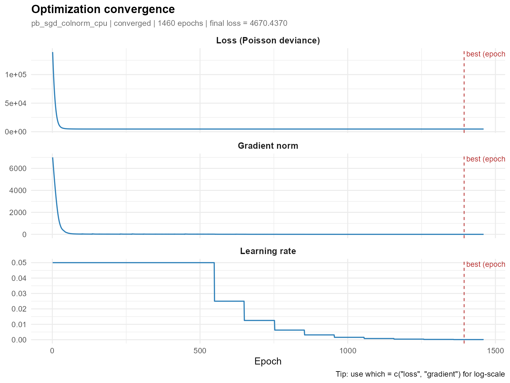
Comparing with a GPU-optimized large city:
plot_convergence(result_bh)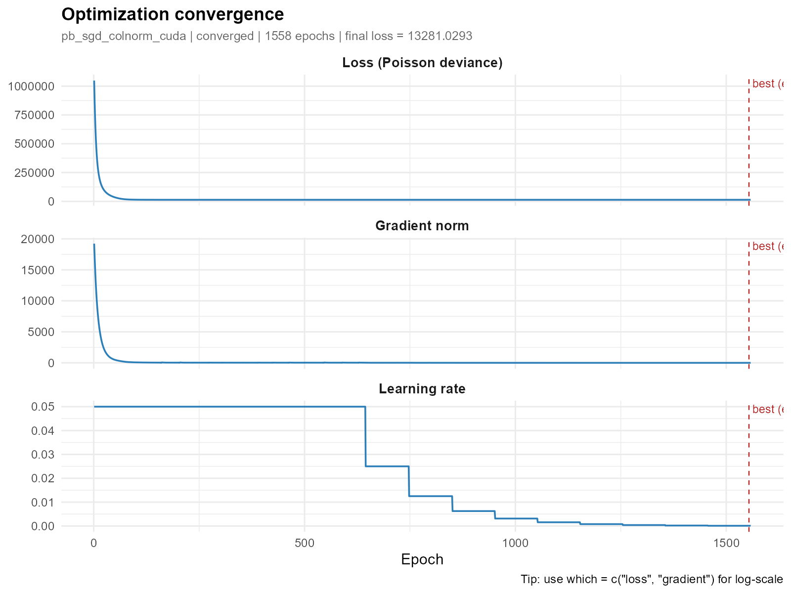
Show only the loss panel:
plot_convergence(result_vga, which = "loss")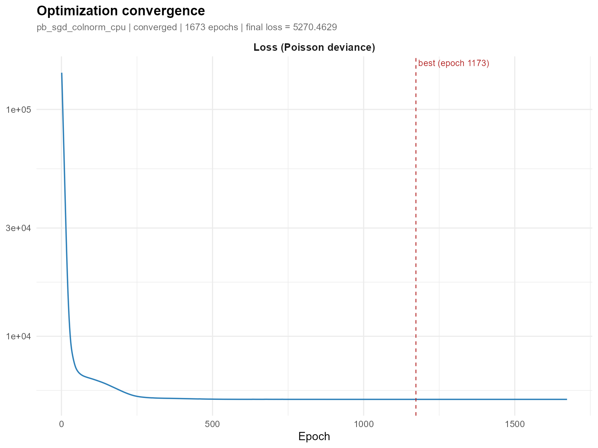
Log scale for loss and gradient (useful when the values span orders of magnitude):
plot_convergence(result_vga, which = c("loss", "gradient"), log_y = TRUE)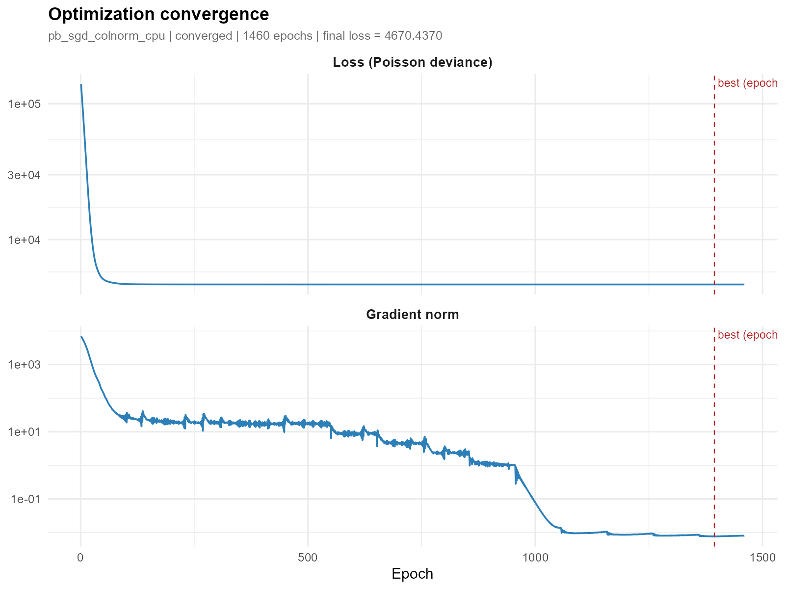
Interpretation
- Good convergence: Smooth, monotonically decreasing loss that plateaus. Gradient norm approaches zero. The vertical dashed red line marks the best epoch.
-
Poor convergence: Oscillating loss, gradient that
doesn’t shrink, or loss that hasn’t plateaued by the last epoch.
Consider increasing
max_epochsor adjusting the learning rate. - Learning rate: If using cosine annealing, you’ll see a decaying pattern. Flat LR = constant step size throughout.
3. Alpha Decay Parameters: plot_alpha()
Intuition
The parameter controls how sharply the weight of station decays with travel time for tract . Higher means voters are more localized (sharp decay — only nearby stations matter). Lower means voters come from a broader area (gradual decay — distant stations still contribute).
is a matrix with one row per tract and one column per demographic bracket (14 brackets = 7 age groups 2 genders). Different brackets may have different decay patterns (e.g., young voters may travel farther to vote).
Formal definition
The weight before column normalization is:
where is the travel time (in minutes) from tract to station . The final weight is (column-normalized so each station’s voters are fully distributed).
Applied examples: Map mode
The map mode collapses the 14-bracket alpha matrix to a single scalar
per tract using summary_fn. This is the key visualization
choice — different summaries answer different questions.
Median (default) — the “typical” alpha across all brackets:
plot_alpha(result_vga, type = "map", summary_fn = "median")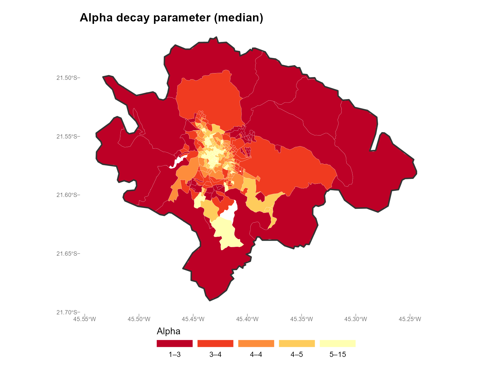
Mean — sensitive to extreme values in any bracket:
plot_alpha(result_vga, type = "map", summary_fn = "mean")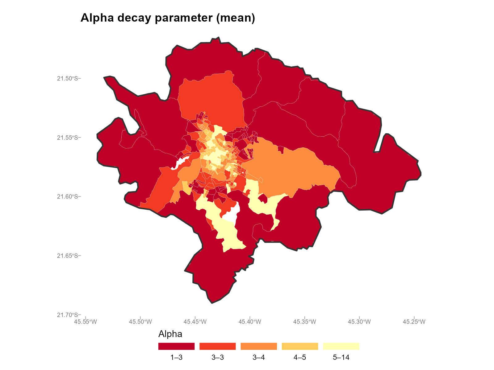
Population-weighted — weights each bracket by the tract’s population in that bracket:
plot_alpha(result_vga, type = "map", summary_fn = "pop_weighted")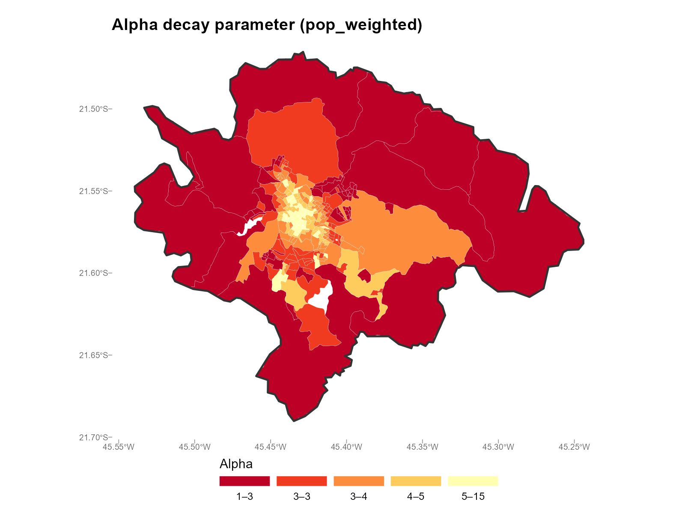
Range () — measures how much varies across brackets within each tract:
plot_alpha(result_vga, type = "map", summary_fn = "range")
Single bracket (e.g., bracket 1 = Male 18–20):
plot_alpha(result_vga, type = "map", summary_fn = 1)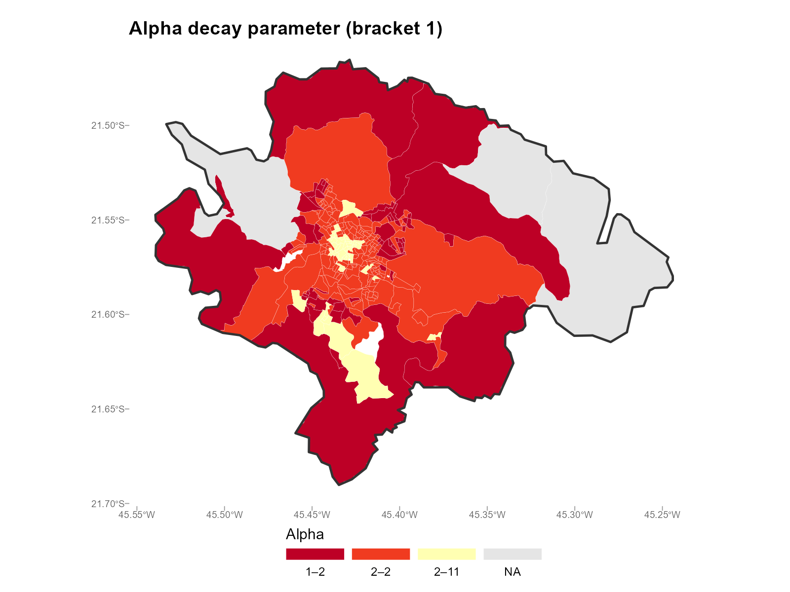
Large city comparison (Belo Horizonte):
plot_alpha(result_bh, type = "map", summary_fn = "median")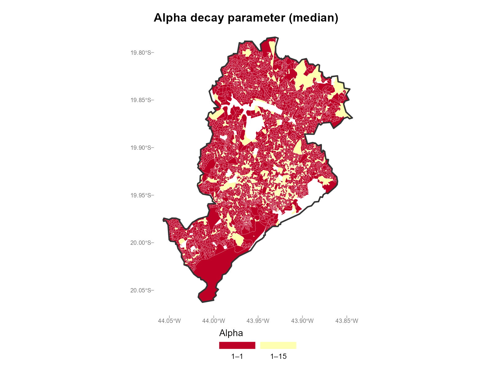
Applied examples: Histogram mode
Density plots faceted by bracket. With 14 brackets arranged in a 2$$7 grid, you can compare age groups and genders at a glance.
plot_alpha(result_nit, type = "histogram")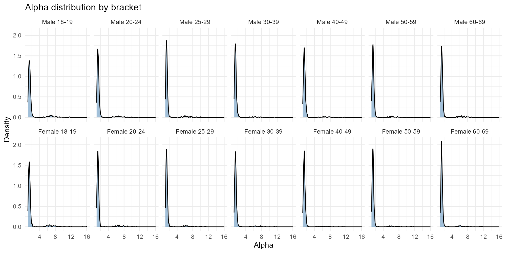
Select specific brackets:
plot_alpha(result_nit, type = "histogram", brackets = c(1, 7, 8, 14))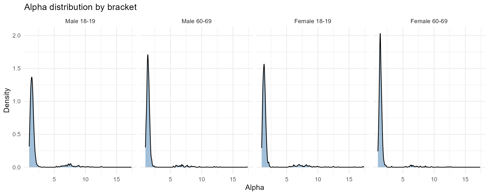
Small city (narrower distributions due to fewer tracts):
plot_alpha(result_igr, type = "histogram")
Applied examples: Bracket boxplot
The most compact view — one boxplot per bracket on a single panel:
plot_alpha(result_bh, type = "bracket")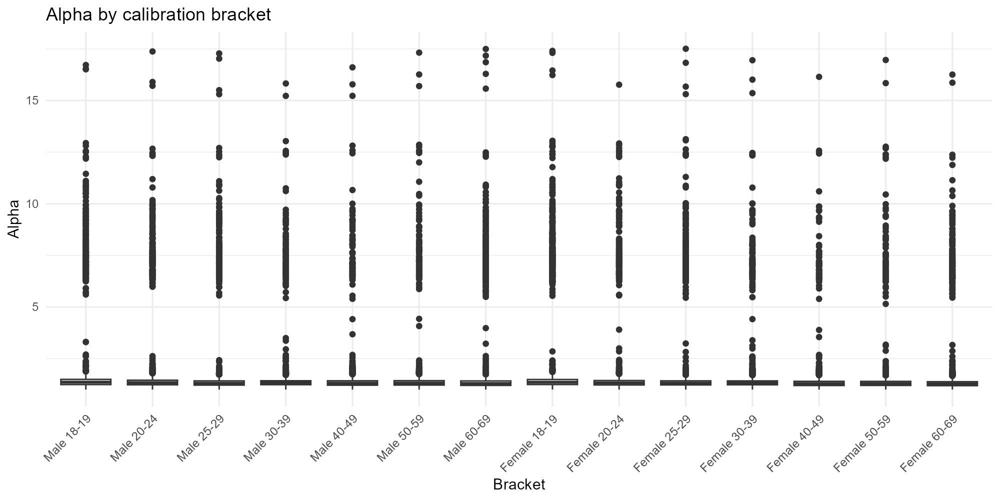
Male brackets only:
plot_alpha(result_nit, type = "bracket", brackets = 1:7)
Interpretation
- Urban core vs periphery: Central tracts with many nearby stations tend to have higher (sharper decay). Peripheral tracts with few nearby stations have lower (they must draw from distant stations).
- Age patterns: Younger brackets may show different distributions than older ones, reflecting different mobility patterns.
- Range map: High range = the optimizer found very different decay rates for different brackets in that tract. This often occurs at the urban-rural boundary.
- : Effectively nearest-station assignment. The decay is so steep that only the closest station has non-negligible weight.
4. Calibration Residuals: plot_residuals() +
residual_summary()
Intuition
The model calibrates against known census demographics (population by agegender bracket). Residuals measure how well the model reproduces these known quantities. Small residuals mean the model’s spatial allocation of voters closely matches census demographics — giving confidence that the interpolated (unknown) electoral variables are also spatially accurate.
Formal definition
Three types of residuals are available:
- Raw: (fitted minus observed). Scale depends on population size.
- Pearson: . Standardized under the Poisson assumption — comparable across tracts of different sizes.
- Deviance: . Individual Poisson deviance contributions.
Applied examples: Map mode
For maps, summary_fn collapses across the 14 brackets to
a single value per tract.
RMSE (default) — magnitude of misfit:
plot_residuals(result_vga, type = "map", summary_fn = "rmse")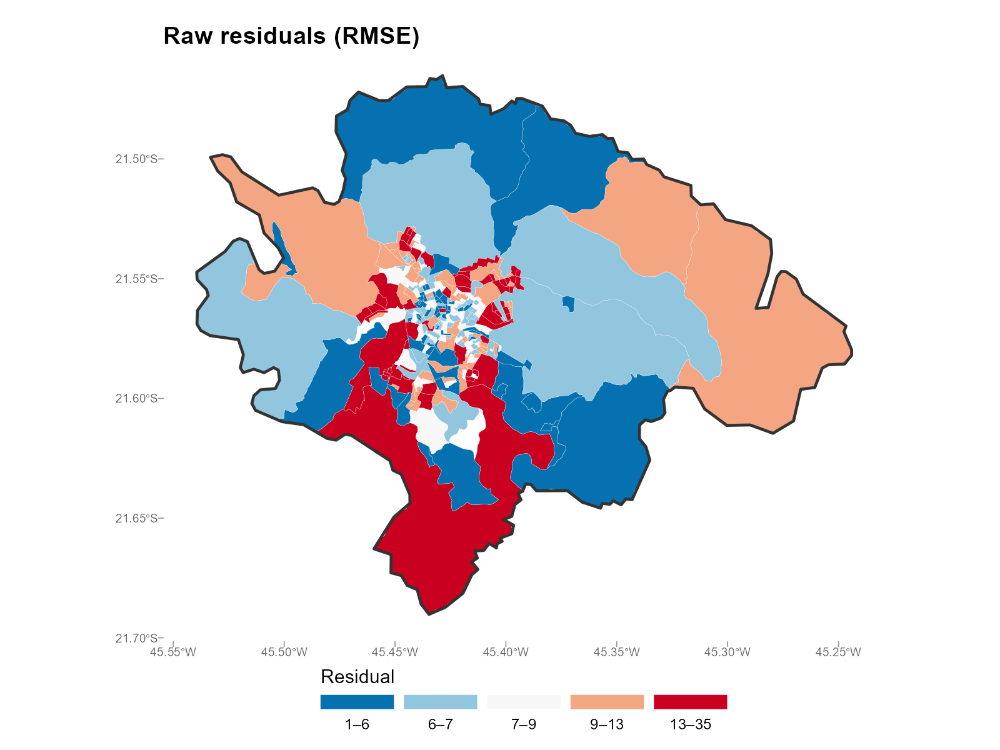
Mean — directional bias (positive = over-prediction, negative = under-prediction):
plot_residuals(result_vga, type = "map", summary_fn = "mean")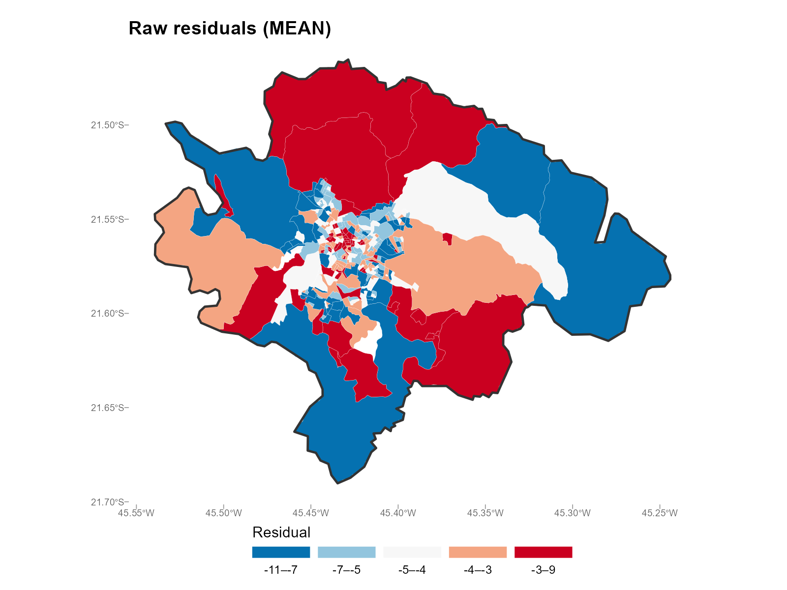
Pearson residuals (standardized):
plot_residuals(result_vga, type = "map", residual_type = "pearson",
summary_fn = "rmse")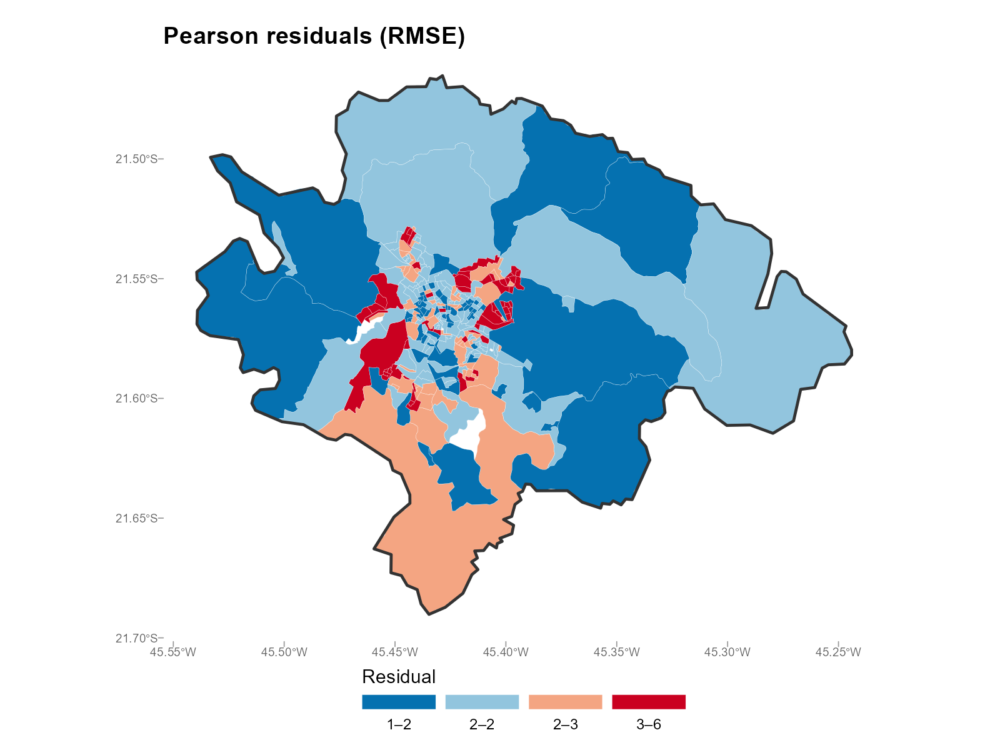
Large city (Belo Horizonte):
plot_residuals(result_bh, type = "map", summary_fn = "rmse")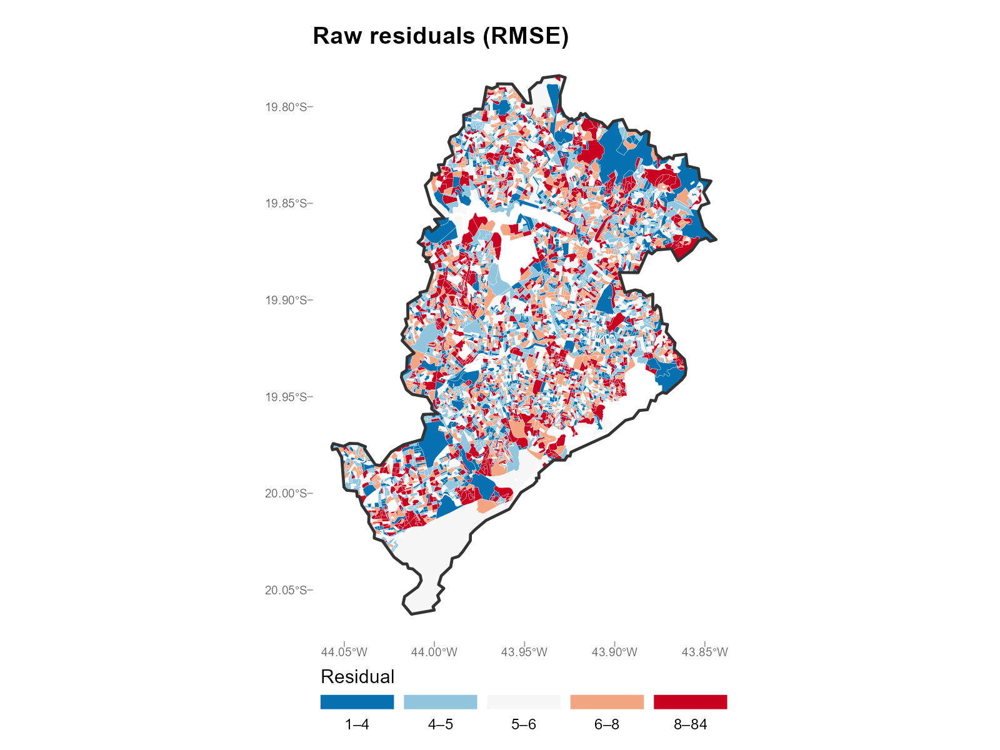
Single bracket:
plot_residuals(result_vga, type = "map", summary_fn = 1)
Applied examples: Histogram mode
plot_residuals(result_nit, type = "histogram")
Compare with Pearson residuals:
plot_residuals(result_nit, type = "histogram", residual_type = "pearson")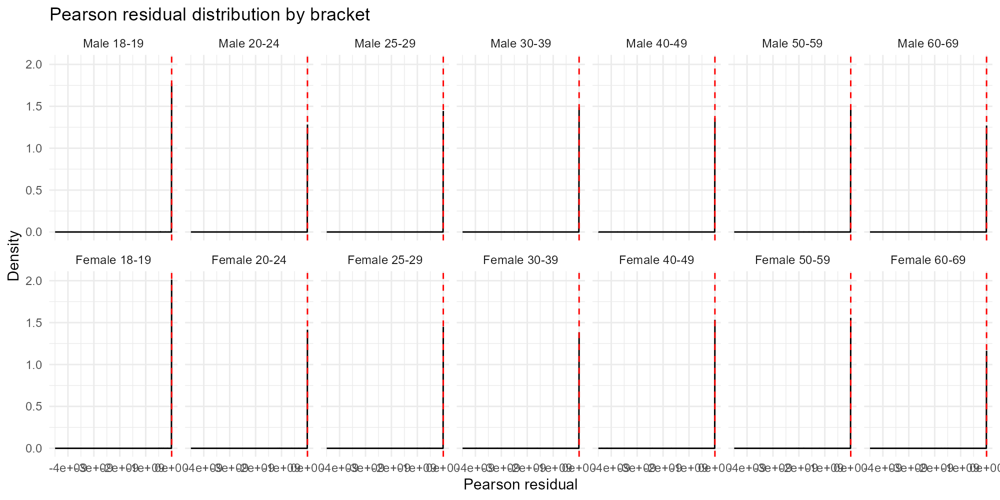
Applied examples: Bracket boxplot
plot_residuals(result_bh, type = "bracket")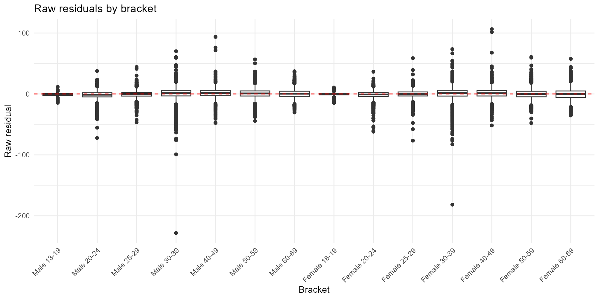
Deviance scale:
plot_residuals(result_bh, type = "bracket", residual_type = "deviance")
Applied examples: Scatter (fitted vs observed)
plot_residuals(result_igr, type = "scatter")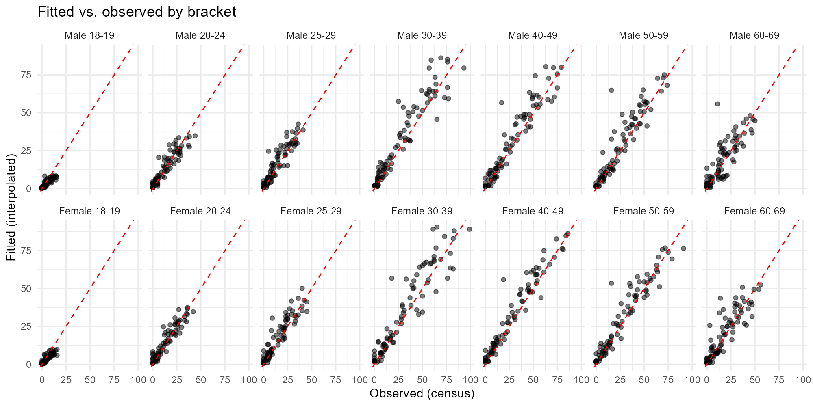
Selected brackets:
plot_residuals(result_vga, type = "scatter", brackets = c(1, 14))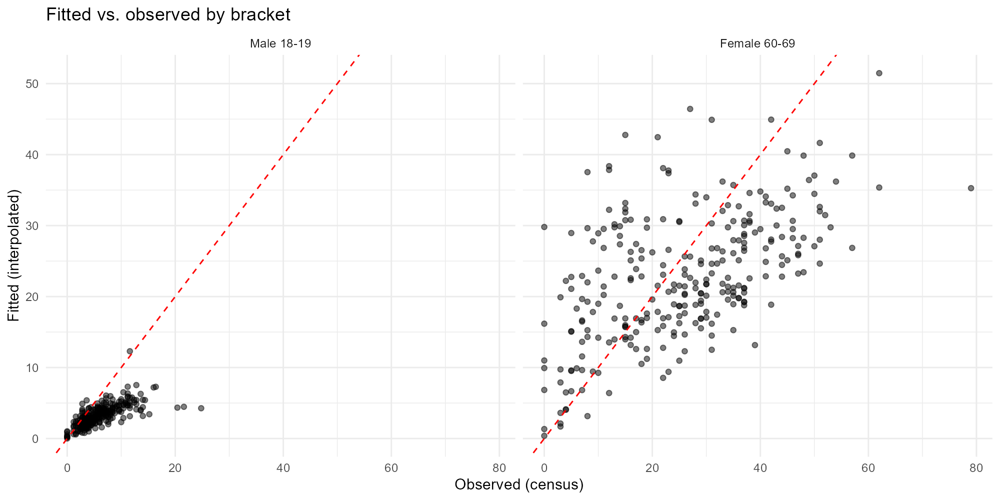
Tabular summary: residual_summary()
residual_summary(result_vga)#> $per_bracket
#> bracket mean rmse max_abs pct_gt_2sd
#> 1 Male 18-19 -2.827957 4.209189 20.46048 11.827957
#> 2 Male 20-24 -4.939068 8.287797 30.71516 11.111111
#> 3 Male 25-29 -3.688171 8.342815 50.75840 5.017921
#> 4 Male 30-39 -8.189962 17.909438 83.99157 7.885305
#> 5 Male 40-49 -6.788528 13.438064 52.24830 8.243728
#> 6 Male 50-59 -3.684587 11.706946 65.13645 5.017921
#> 7 Male 60-69 -2.093190 11.244240 35.32155 5.017921
#> 8 Female 18-19 -1.896057 3.410637 15.37841 8.243728
#> 9 Female 20-24 -4.594981 8.917599 42.27376 6.810036
#> 10 Female 25-29 -3.767024 9.286171 58.46458 4.659498
#> 11 Female 30-39 -8.634406 19.425422 78.13362 8.243728
#> 12 Female 40-49 -7.537632 13.969830 49.00763 9.318996
#> 13 Female 50-59 -4.498207 11.625338 37.09436 7.168459
#> 14 Female 60-69 -2.953405 13.122651 36.39059 3.225806
#>
#> $per_tract
#> tract_id mean rmse worst_bracket
#> 1 317070105000001 -4.630109290 7.854223 Male 30-39
#> 2 317070105000008 -5.886793911 8.031612 Male 40-49
#> 3 317070105000009 -6.605707241 9.215402 Female 50-59
#> 4 317070105000010 -4.236636139 9.349483 Female 60-69
#> 5 317070105000013 -6.013139227 7.726308 Male 50-59
#> 6 317070105000014 -4.856914096 6.287569 Female 60-69
#> 7 317070105000015 -3.319747847 5.310147 Female 20-24
#> 8 317070105000016 -3.774009904 6.453683 Male 40-49
#> 9 317070105000017 -8.241622634 10.827912 Female 30-39
#> 10 317070105000019 -3.485833675 5.424265 Male 60-69
#> 11 317070105000021 -5.220301588 7.021112 Male 40-49
#> 12 317070105000022 -3.004615132 5.403922 Female 25-29
#> 13 317070105000023 -4.852032672 7.434122 Male 30-39
#> 14 317070105000024 -4.793924563 7.593723 Male 25-29
#> 15 317070105000025 -3.669051013 8.001687 Female 60-69
#> 16 317070105000026 -2.649422078 5.080389 Female 30-39
#> 17 317070105000028 -8.070366895 14.782164 Female 30-39
#> 18 317070105000029 -5.565291775 10.422337 Female 40-49
#> 19 317070105000031 -4.016547848 8.530849 Female 60-69
#> 20 317070105000032 -5.438884433 12.164612 Male 50-59
#> 21 317070105000033 -3.930110659 5.308515 Male 25-29
#> 22 317070105000035 -4.356855694 6.736049 Female 30-39
#> 23 317070105000036 -5.416730985 9.966833 Male 30-39
#> 24 317070105000037 -3.814261695 5.809060 Female 60-69
#> 25 317070105000039 -5.340265667 8.765161 Male 40-49
#> 26 317070105000040 -5.714328208 22.982966 Male 50-59
#> 27 317070105000041 -4.516477218 9.037659 Female 50-59
#> 28 317070105000043 -3.035520014 5.251145 Male 40-49
#> 29 317070105000044 -5.065246215 14.888315 Male 40-49
#> 30 317070105000045 -5.714497381 9.388884 Female 40-49
#> 31 317070105000047 -7.080920378 12.265487 Female 50-59
#> 32 317070105000048 -4.262370418 8.282950 Male 30-39
#> 33 317070105000049 -3.988253366 6.319518 Female 30-39
#> 34 317070105000050 -5.242626324 9.581782 Female 60-69
#> 35 317070105000051 -3.266283543 4.756737 Female 40-49
#> 36 317070105000052 -5.135468378 8.094767 Female 30-39
#> 37 317070105000054 -4.503018900 12.261451 Female 30-39
#> 38 317070105000055 -4.449178769 16.379824 Female 50-59
#> 39 317070105000056 -2.748768786 6.040385 Female 60-69
#> 40 317070105000057 -3.667382542 8.853467 Female 60-69
#> 41 317070105000059 -5.719035727 10.739006 Male 40-49
#> 42 317070105000060 -5.863244692 7.238815 Male 50-59
#> 43 317070105000061 -4.702417169 7.354734 Female 40-49
#> 44 317070105000063 -4.447474290 12.301240 Female 60-69
#> 45 317070105000065 -6.688117725 12.894434 Male 60-69
#> 46 317070105000066 -5.815605557 12.195837 Male 60-69
#> 47 317070105000067 -3.829085686 9.608111 Female 50-59
#> 48 317070105000069 -7.304365784 10.085045 Male 30-39
#> 49 317070105000070 -5.294118505 8.530518 Female 50-59
#> 50 317070105000071 -5.168341863 7.795125 Female 60-69
#> 51 317070105000074 -4.774002961 7.707495 Female 60-69
#> 52 317070105000077 -4.070944532 8.596225 Female 60-69
#> 53 317070105000078 -5.443628548 8.314696 Female 60-69
#> 54 317070105000079 -5.588898034 8.396789 Female 40-49
#> 55 317070105000082 -5.835901479 9.833477 Male 60-69
#> 56 317070105000083 -4.819548566 10.393838 Female 50-59
#> 57 317070105000086 -5.968035069 10.224676 Male 40-49
#> 58 317070105000087 -5.485904904 8.760943 Female 50-59
#> 59 317070105000089 -7.687342312 12.214781 Female 40-49
#> 60 317070105000091 -6.057448563 10.690688 Female 60-69
#> 61 317070105000094 -7.125899354 9.276823 Female 60-69
#> 62 317070105000095 -7.256897776 9.933460 Male 40-49
#> 63 317070105000096 -7.064500230 10.916087 Female 40-49
#> 64 317070105000100 -10.200379624 16.880535 Female 40-49
#> 65 317070105000101 -4.860209009 10.809288 Male 50-59
#> 66 317070105000102 -9.704647033 16.497653 Female 50-59
#> 67 317070105000103 -3.529739917 7.245040 Male 30-39
#> 68 317070105000104 -5.207516048 10.435571 Female 40-49
#> 69 317070105000105 -6.832841284 9.900862 Female 60-69
#> 70 317070105000106 -4.882422787 7.992882 Female 60-69
#> 71 317070105000107 -5.181972658 10.575480 Female 60-69
#> 72 317070105000108 -4.647805428 12.785139 Female 60-69
#> 73 317070105000112 -10.894226944 19.939288 Female 40-49
#> 74 317070105000114 -7.626299688 13.621924 Female 50-59
#> 75 317070105000115 -7.844729447 16.809352 Male 50-59
#> 76 317070105000116 -5.158202234 11.493129 Male 50-59
#> 77 317070105000117 -6.074862316 9.454171 Female 40-49
#> 78 317070105000120 -5.026261835 15.485737 Male 40-49
#> 79 317070105000121 -1.498502269 4.891413 Male 50-59
#> 80 317070105000124 -9.559874370 12.913171 Female 30-39
#> 81 317070105000125 -8.048842436 10.295527 Male 50-59
#> 82 317070105000126 -4.405281841 7.727971 Female 60-69
#> 83 317070105000127 -4.913965288 7.938807 Female 50-59
#> 84 317070105000128 -6.700204886 11.855738 Male 60-69
#> 85 317070105000129 -6.085356389 9.848476 Female 50-59
#> 86 317070105000130 -5.807968497 7.707512 Female 50-59
#> 87 317070105000131 -6.958212509 13.738961 Female 60-69
#> 88 317070105000133 -6.229899023 12.637184 Female 60-69
#> 89 317070105000134 -3.186294392 6.723167 Female 50-59
#> 90 317070105000135 -5.048888016 11.295701 Female 60-69
#> 91 317070105000136 -1.910540233 5.724796 Female 30-39
#> 92 317070105000138 -1.840615941 2.985009 Female 60-69
#> 93 317070105000139 -2.926372703 7.342291 Male 50-59
#> 94 317070105000140 -1.723690277 4.687788 Male 50-59
#> 95 317070105000141 -1.988978227 4.763140 Male 50-59
#> 96 317070105000142 -1.931905284 4.152455 Male 40-49
#> 97 317070105000143 -3.275506461 4.608420 Male 50-59
#> 98 317070105000144 -4.385480945 6.638927 Male 40-49
#> 99 317070105000147 -4.461848823 11.579625 Male 40-49
#> 100 317070105000148 -7.150472634 10.442835 Female 40-49
#> 101 317070105000149 -4.186255476 8.908961 Female 50-59
#> 102 317070105000150 -0.108535425 2.279904 Female 60-69
#> 103 317070105000151 -9.699318433 14.925035 Male 50-59
#> 104 317070105000152 -4.191106742 12.523168 Female 40-49
#> 105 317070105000153 -5.288966305 7.015434 Female 60-69
#> 106 317070105000154 -6.149877547 7.666987 Female 50-59
#> 107 317070105000155 -4.545943460 6.086591 Female 50-59
#> 108 317070105000156 -3.493053554 6.633612 Female 60-69
#> 109 317070105000157 -7.592280903 15.158657 Male 50-59
#> 110 317070105000158 -4.650061477 5.980179 Male 60-69
#> 111 317070105000159 -6.731951128 15.840909 Female 40-49
#> 112 317070105000160 -5.998235475 11.393179 Female 50-59
#> 113 317070105000161 -8.594718441 16.616369 Female 50-59
#> 114 317070105000162 -6.579159844 16.356048 Male 50-59
#> 115 317070105000164 -2.354986192 8.684508 Female 30-39
#> 116 317070105000165 0.218517272 1.103221 Female 25-29
#> 117 317070105000166 -6.989158889 9.358852 Female 50-59
#> 118 317070105000168 -7.765005624 9.898700 Female 40-49
#> 119 317070105000169 -6.361366435 8.610138 Female 60-69
#> 120 317070105000171 -5.815823803 14.518528 Female 40-49
#> 121 317070105000172 -5.462784849 16.081400 Male 40-49
#> 122 317070105000174 -4.850434959 16.372646 Male 30-39
#> 123 317070105000175 -2.787648323 10.164460 Female 30-39
#> 124 317070105000176 -1.646013773 3.789748 Male 30-39
#> 125 317070105000177 15.878238663 21.227877 Female 30-39
#> 126 317070105000178 -4.666537899 15.232267 Female 30-39
#> 127 317070105000179 -4.179462036 6.771014 Female 60-69
#> 128 317070105000180 -3.880096755 7.123963 Female 60-69
#> 129 317070105000181 -3.158900069 6.700366 Male 50-59
#> 130 317070105000182 -6.296226443 20.667942 Female 30-39
#> 131 317070105000183 -9.572683530 21.044592 Female 30-39
#> 132 317070105000185 -4.489352289 6.116863 Female 50-59
#> 133 317070105000186 -4.404326626 8.817879 Female 60-69
#> 134 317070105000188 -7.299105939 9.309987 Female 60-69
#> 135 317070105000189 -4.615226896 9.798512 Female 60-69
#> 136 317070105000190 -3.567255147 4.945474 Female 40-49
#> 137 317070105000191 -2.243721940 5.405970 Female 60-69
#> 138 317070105000192 -4.062288641 7.806079 Female 30-39
#> 139 317070105000193 -3.499670704 8.575538 Male 30-39
#> 140 317070105000194 -6.056262871 11.250656 Female 60-69
#> 141 317070105000196 -7.598395228 24.242550 Female 30-39
#> 142 317070105000197 0.076637984 1.576852 Male 30-39
#> 143 317070105000198 -0.540836294 1.614873 Male 60-69
#> 144 317070105000199 -5.842992046 9.630518 Female 40-49
#> 145 317070105000200 -7.529359166 14.266759 Male 40-49
#> 146 317070105000201 -7.293401296 16.628752 Female 50-59
#> 147 317070105000205 -7.485828616 20.438674 Female 40-49
#> 148 317070105000206 -7.565716842 19.029706 Female 40-49
#> 149 317070105000207 -2.248787416 6.928961 Male 20-24
#> 150 317070105000208 -5.875739684 15.690290 Female 30-39
#> 151 317070105000209 -7.346604849 18.928375 Female 30-39
#> 152 317070105000210 -5.307557284 13.209943 Female 40-49
#> 153 317070105000211 -3.846382316 11.588691 Female 20-24
#> 154 317070105000212 -4.739416325 11.852023 Female 40-49
#> 155 317070105000213 -5.294724446 13.928285 Female 30-39
#> 156 317070105000214 -9.096545340 27.247339 Female 30-39
#> 157 317070105000216 -6.772650635 21.844016 Male 30-39
#> 158 317070105000217 -3.057020323 11.937814 Female 30-39
#> 159 317070105000219 -9.326667169 31.210258 Male 30-39
#> 160 317070105000220 -2.311173032 6.620009 Female 30-39
#> 161 317070105000221 -3.553621233 6.754268 Female 60-69
#> 162 317070105000222 -2.201388172 4.478535 Male 60-69
#> 163 317070105000223 -1.617638366 4.516715 Female 60-69
#> 164 317070105000224 -2.668126737 7.752327 Female 25-29
#> 165 317070105000225 -2.155761835 5.599975 Male 60-69
#> 166 317070105000226 -2.109777381 5.128595 Male 25-29
#> 167 317070105000227 -4.081941391 6.567115 Male 30-39
#> 168 317070105000228 -3.007399640 5.106716 Male 40-49
#> 169 317070105000229 -3.809625258 6.825246 Female 60-69
#> 170 317070105000230 -3.499551860 5.279647 Female 60-69
#> 171 317070105000231 -3.969128094 5.876176 Male 30-39
#> 172 317070105000232 -2.950180828 4.329330 Male 60-69
#> 173 317070105000233 -2.692962530 4.714858 Male 30-39
#> 174 317070105000234 -2.110104487 5.469849 Female 40-49
#> 175 317070105000235 -4.042528855 7.564898 Female 30-39
#> 176 317070105000236 -2.365566109 4.671211 Female 20-24
#> 177 317070105000237 -5.210946368 8.988258 Female 40-49
#> 178 317070105000238 -3.212206418 7.195733 Female 30-39
#> 179 317070105000239 -2.669467521 5.063805 Male 50-59
#> 180 317070105000240 -2.638176546 6.619145 Female 60-69
#> 181 317070105000241 -3.419243510 9.717658 Female 50-59
#> 182 317070105000242 -5.649863651 9.207695 Male 30-39
#> 183 317070105000243 -3.054202636 5.550048 Male 30-39
#> 184 317070105000244 -3.038228141 6.030304 Male 20-24
#> 185 317070105000245 -6.295349651 8.254236 Female 40-49
#> 186 317070105000246 -4.938819175 15.213054 Female 30-39
#> 187 317070105000247 -4.004123527 5.681665 Male 25-29
#> 188 317070105000248 -3.768515679 6.205819 Female 60-69
#> 189 317070105000249 -2.811335932 5.390914 Female 60-69
#> 190 317070105000250 -2.234091598 10.459655 Male 40-49
#> 191 317070105000251 -6.021435405 13.986366 Female 30-39
#> 192 317070105000252 -6.312768634 9.814692 Female 40-49
#> 193 317070105000253 -5.777188001 12.785393 Female 30-39
#> 194 317070105000254 -4.581057831 7.442210 Male 50-59
#> 195 317070105000255 -5.338220353 6.965514 Female 50-59
#> 196 317070105000256 -3.651699641 7.934269 Male 40-49
#> 197 317070105000257 -4.709354506 6.735817 Female 40-49
#> 198 317070105000258 -3.689301804 7.827739 Female 40-49
#> 199 317070105000259 -3.874193811 11.284335 Female 60-69
#> 200 317070105000260 -2.763944395 7.321266 Female 60-69
#> 201 317070105000261 -4.672432416 10.546564 Male 60-69
#> 202 317070105000262 -2.958946109 8.496072 Male 60-69
#> 203 317070105000263 -5.098413921 7.019186 Male 40-49
#> 204 317070105000264 -3.522359789 8.903755 Male 60-69
#> 205 317070105000265 -3.704107530 6.755859 Male 60-69
#> 206 317070105000266 -3.194381220 6.111179 Female 60-69
#> 207 317070105000267 -2.917722150 5.824603 Male 40-49
#> 208 317070105000268 -3.496144188 5.447981 Male 30-39
#> 209 317070105000269 -6.001768265 8.569098 Female 60-69
#> 210 317070105000270 -2.666196919 8.370687 Female 40-49
#> 211 317070105000271 -7.047635761 11.042345 Male 40-49
#> 212 317070105000272 -3.066115920 6.105955 Male 20-24
#> 213 317070105000273 -7.562849583 11.821085 Female 40-49
#> 214 317070105000274 -3.655213518 7.211799 Male 40-49
#> 215 317070105000275 -3.695887724 8.270917 Female 50-59
#> 216 317070105000276 -1.189600471 2.233211 Male 50-59
#> 217 317070105000277 -4.953878364 16.373349 Female 20-24
#> 218 317070105000278 -3.565794681 11.393461 Female 20-24
#> 219 317070105000279 -11.594007183 23.633192 Female 30-39
#> 220 317070105000281 -6.654144025 8.642368 Male 30-39
#> 221 317070105000282 -8.546463443 22.613677 Male 40-49
#> 222 317070105000283 -4.432225628 8.039981 Female 60-69
#> 223 317070105000284 -3.707090652 8.825232 Female 60-69
#> 224 317070105000285 -0.537464001 2.768665 Male 50-59
#> 225 317070105000286 -1.807909013 3.232673 Male 60-69
#> 226 317070105000287 -4.381317356 7.938512 Male 50-59
#> 227 317070105000288 -6.086301134 11.600421 Male 50-59
#> 228 317070105000289 -4.027160750 4.933711 Male 20-24
#> 229 317070105000290 -7.748782348 23.511662 Male 30-39
#> 230 317070105000291 -4.363969995 12.134440 Female 30-39
#> 231 317070105000292 -7.365142075 30.242930 Female 30-39
#> 232 317070105000293 -6.905727839 25.152891 Male 30-39
#> 233 317070105000294 -3.547164443 13.508307 Female 40-49
#> 234 317070105000295 -6.964366262 16.209073 Female 30-39
#> 235 317070105000296 -4.223952680 10.398351 Male 60-69
#> 236 317070105000297 -4.222351460 6.777063 Male 50-59
#> 237 317070105000298 -6.331106512 13.147982 Female 30-39
#> 238 317070105000299 -4.475451063 12.343387 Female 30-39
#> 239 317070105000300 -8.980553170 17.210600 Male 30-39
#> 240 317070105000301 -7.290172617 19.088791 Female 30-39
#> 241 317070105000302 -9.407134064 31.048275 Female 30-39
#> 242 317070105000303 -10.080143649 30.117859 Male 30-39
#> 243 317070105000304 -5.209253313 21.294205 Female 30-39
#> 244 317070105000305 -3.690891471 11.889800 Female 30-39
#> 245 317070105000307 -7.492488540 28.964634 Female 30-39
#> 246 317070105000308 -7.898635953 23.927083 Female 25-29
#> 247 317070105000309 -4.080914155 16.058502 Male 30-39
#> 248 317070105000310 -6.268152384 21.728936 Female 25-29
#> 249 317070105000311 -1.650459354 3.442875 Female 60-69
#> 250 317070105000312 -5.679039355 9.623447 Female 40-49
#> 251 317070105000313 -5.994919323 12.424701 Female 40-49
#> 252 317070105000314 -2.954517011 4.214217 Female 30-39
#> 253 317070105000315 -1.422398423 3.448372 Female 50-59
#> 254 317070105000316 -1.276813124 4.535691 Male 40-49
#> 255 317070105000317 0.002337349 2.109013 Male 50-59
#> 256 317070105000318 -0.655811850 3.065793 Female 50-59
#> 257 317070105000319 -10.471478154 35.318308 Female 25-29
#> 258 317070105000320 -7.246357928 26.947617 Male 30-39
#> 259 317070105000321 -2.639987955 4.939696 Male 20-24
#> 260 317070105000322 0.084269509 1.458974 Male 20-24
#> 261 317070105000323 -2.416368901 5.339798 Female 20-24
#> 262 317070105000324 -4.232734258 7.743083 Female 40-49
#> 263 317070105000325 -1.233191186 6.404219 Female 60-69
#> 264 317070105000326 -0.762689195 3.540455 Female 50-59
#> 265 317070105000327 -1.692596331 4.349274 Female 40-49
#> 266 317070105000328 -1.191501039 3.966117 Female 50-59
#> 267 317070105000329 -4.797839235 7.410948 Male 20-24
#> 268 317070105000330 -5.527286711 9.135221 Male 20-24
#> 269 317070105000331 -2.860272287 4.079684 Female 25-29
#> 270 317070105000332 -2.623671435 4.561947 Male 50-59
#> 271 317070105000333 -8.217850852 16.571257 Male 40-49
#> 272 317070105000334 -4.938284061 8.354723 Female 40-49
#> 273 317070105000335 -4.687237419 16.711641 Male 30-39
#> 274 317070105000336 -6.687065772 24.666189 Female 30-39
#> 275 317070105000337 -0.821977943 2.928114 Male 60-69
#> 276 317070105000338 -6.065643406 17.062547 Female 25-29
#> 277 317070105000339 -7.949126845 14.063181 Female 40-49
#> 278 317070105000340 -3.574588421 5.639981 Male 60-69
#> 279 317070105000342 -3.127221173 6.200498 Male 50-59
#>
#> $overall
#> $overall$rmse
#> [1] 11.88657
#>
#> $overall$mean_bias
#> [1] -4.720941
#>
#> $overall$total_deviance
#> [1] 18946.51Interpretation
- Raw residuals: Scale depends on tract population. A residual of 10 means different things in a tract with 50 people vs 5,000. Use Pearson or deviance for fair comparison.
- Pearson residuals: Standardized — values around are typical. Values are outliers under the Poisson assumption.
- Bracket comparison: If one bracket consistently has larger residuals, the model may have trouble with that demographic group — check whether the census data for that bracket is reliable.
- Scatter plot: Points should cluster tightly around the 45-degree line. Systematic departures indicate bias.
5. Weight Structure
Intuition
The weight matrix (dimensions , tracts sources) is the heart of the interpolation. It determines how voters from each station are allocated to each tract. Understanding the structure of reveals:
- Catchment areas: which stations serve which tracts
- Concentration: does a tract depend on one station or many?
- Fragility: tracts dependent on a single station are sensitive to that station’s data
Formal definition
Since is column-normalized (), the row sums are NOT 1. For concentration measures, we row-normalize: .
- Shannon entropy:
- Effective number of sources: — the equivalent number of equal-weight stations
- Herfindahl-Hirschman Index: — ranges from (perfect equality) to 1 (monopoly by one station)
Tabular summary: weight_summary()
head(weight_summary(result_vga), 15)#> tract_id dominant_source dominant_weight top3_weight
#> 317070105000001 317070105000001 26 0.12408125 0.12548549
#> 317070105000008 317070105000008 26 0.10368346 0.13690291
#> 317070105000009 317070105000009 14 0.05923250 0.09887616
#> 317070105000010 317070105000010 14 0.08093105 0.09071796
#> 317070105000013 317070105000013 14 0.05163750 0.12089023
#> 317070105000014 317070105000014 14 0.07547978 0.08929105
#> 317070105000015 317070105000015 10 0.05262199 0.05460941
#> 317070105000016 317070105000016 10 0.02950864 0.04743211
#> 317070105000017 317070105000017 10 0.05651994 0.09632084
#> 317070105000019 317070105000019 9 0.02146672 0.04130694
#> 317070105000021 317070105000021 9 0.03803299 0.05853421
#> 317070105000022 317070105000022 9 0.01285708 0.03461886
#> 317070105000023 317070105000023 19 0.03226264 0.09443522
#> 317070105000024 317070105000024 19 0.02869849 0.07895928
#> 317070105000025 317070105000025 9 0.08000839 0.08214851
#> entropy effective_n_sources herfindahl
#> 317070105000001 0.1519486 1.164100 0.95817586
#> 317070105000008 1.5321530 4.628130 0.42717988
#> 317070105000009 2.2700263 9.679655 0.21317381
#> 317070105000010 1.0630185 2.895097 0.63566633
#> 317070105000013 2.1052747 8.209358 0.20094016
#> 317070105000014 1.6159889 5.032863 0.44725614
#> 317070105000015 0.6429356 1.902056 0.80643610
#> 317070105000016 2.4444072 11.523717 0.17699440
#> 317070105000017 2.5797114 13.193330 0.15107200
#> 317070105000019 2.8825026 17.858910 0.09367962
#> 317070105000021 2.8524101 17.329497 0.10108259
#> 317070105000022 2.8477686 17.249250 0.07599913
#> 317070105000023 2.4385696 11.456641 0.11262129
#> 317070105000024 2.5576613 12.905600 0.10251343
#> 317070105000025 0.6114269 1.843059 0.81827336
#> mean_travel_time_weighted
#> 317070105000001 0.1543856
#> 317070105000008 1.4432354
#> 317070105000009 2.4963593
#> 317070105000010 0.8130018
#> 317070105000013 1.8402696
#> 317070105000014 1.3304447
#> 317070105000015 0.2910496
#> 317070105000016 1.4913282
#> 317070105000017 3.6505367
#> 317070105000019 3.1447257
#> 317070105000021 4.7405601
#> 317070105000022 2.7729012
#> 317070105000023 2.9506975
#> 317070105000024 3.1158297
#> 317070105000025 0.5150568
#>
#> ... (279 rows total)Entropy map: plot_weights(type = "entropy")
plot_weights(result_vga, type = "entropy")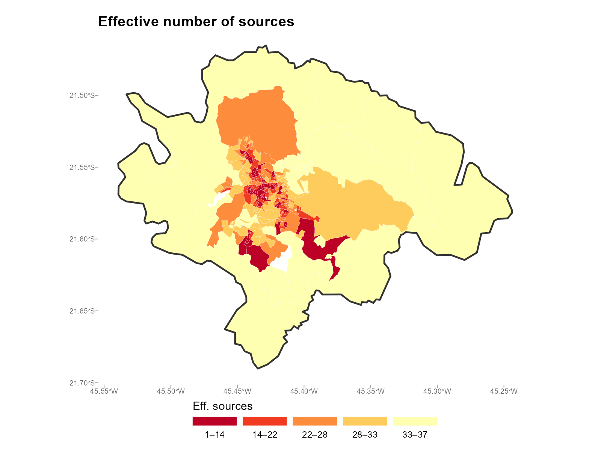
Large city comparison:
plot_weights(result_bh, type = "entropy")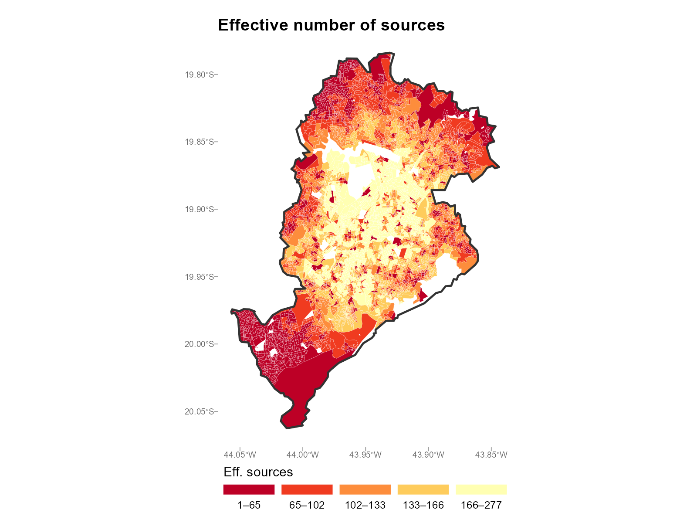
Interactive version (click tracts to see weight summary stats):
plot_weights(result_bh, type = "entropy", interactive = TRUE)Dominant station map:
plot_weights(type = "dominant")
plot_weights(result_vga, type = "dominant")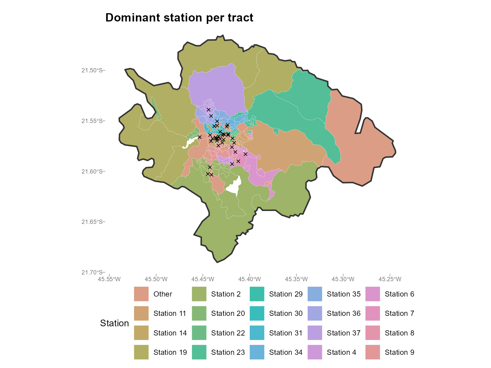
plot_weights(result_nit, type = "dominant")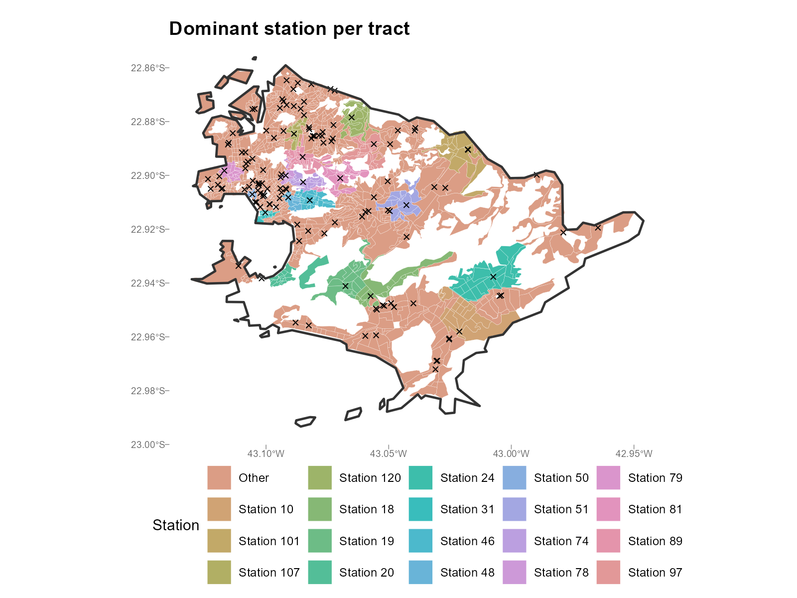
Catchment mode: plot_weights(type = "catchment")
Auto-selects the tract with highest effective number of sources:
plot_weights(result_vga, type = "catchment")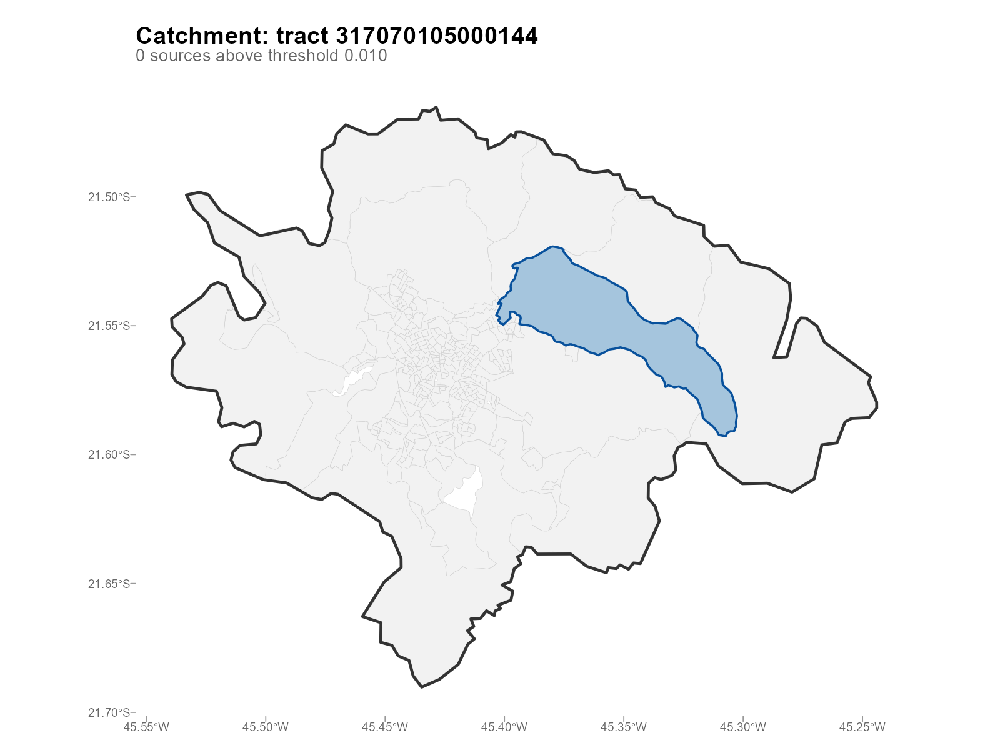
Filtered view with top_k and threshold:
plot_weights(result_vga, type = "catchment", tract = 1,
top_k = 3, threshold = 0.05)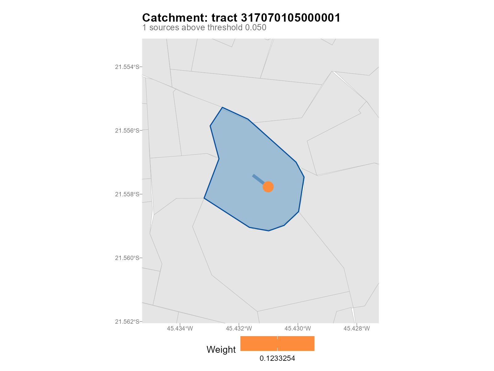
Connections: plot_connections()
Overview — one spoke per tract to its dominant station:
plot_connections(result_vga)
Large city:
plot_connections(result_bh)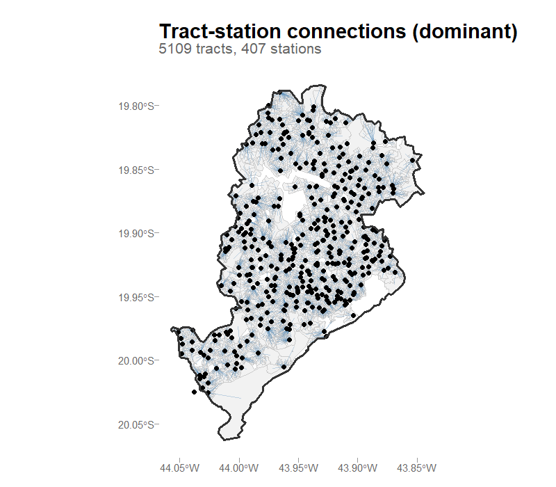
Interactive version for BH (click tracts and stations for detailed weight tables):
Detail for a specific tract:
plot_connections(result_vga, tract = 1)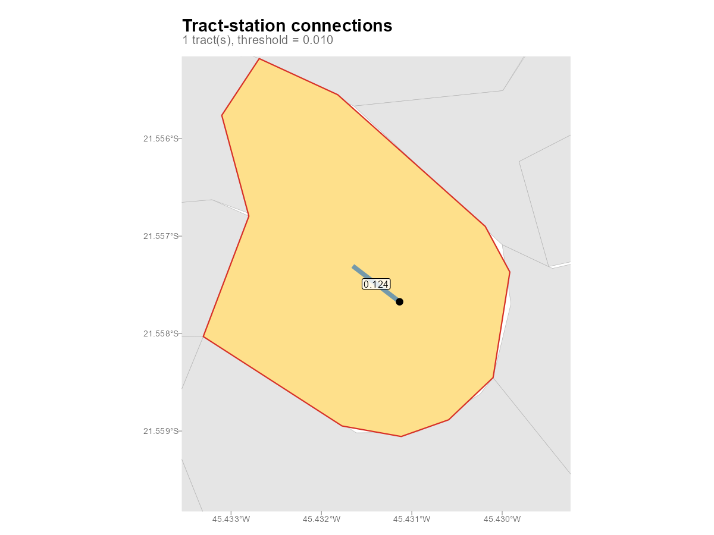
Interactive exploration
All weight diagnostics support interactive = TRUE, which
produces leaflet/mapview maps with rich click popups. This is the
recommended way to explore the weight structure for individual tracts
and stations.
Interactive connections — click any tract to see its top-5 connected stations (with weights, travel times, and cumulative weight). Click any station to see which tracts it serves:
plot_connections(result_vga, interactive = TRUE)Interactive dominant station map — click any tract to see weight summary statistics (effective sources, HHI, dominant weight):
plot_weights(result_vga, type = "dominant", interactive = TRUE)Interpretation
-
Effective number of sources: This is the
exponential of Shannon entropy on the row-normalized weights. A value of
1 means the tract depends on a single station; a value of 10 means the
weights are equivalent to 10 equal-weight stations. High values (e.g.,
> 50) can indicate that the travel time ceiling is creating a uniform
background weight across many distant stations. The
fill_missing = Infdefault (see Section 6) addresses this by zeroing out unreachable pairs. - Low entropy tracts (effective N close to 1): The interpolation for this tract depends almost entirely on a single station. If that station’s data is atypical, the interpolated values may be unreliable.
- Dominant station map: Produces a Voronoi-like partition. If catchment areas don’t match geographic intuition, check the travel time matrix.
- Connections: The spoke pattern should make geographic sense — tracts should connect to nearby stations. Long-distance connections suggest routing issues.
6. Travel Time Data Quality: plot_travel_times()
Intuition
The travel time matrix is the input that drives everything: optimization, weight computation, and ultimately the spatial allocation of voters. Poor travel time data (unreachable pairs, disconnected road networks) directly degrades interpolation quality.
Applied examples
Histogram — distribution of all travel times:
plot_travel_times(result_vga, type = "histogram")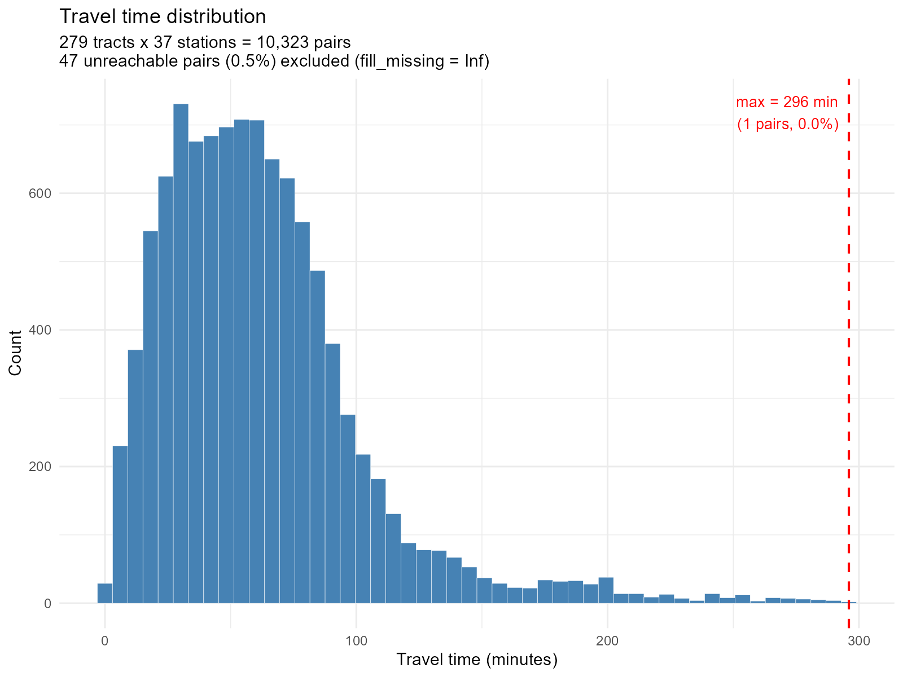
Large city:
plot_travel_times(result_bh, type = "histogram")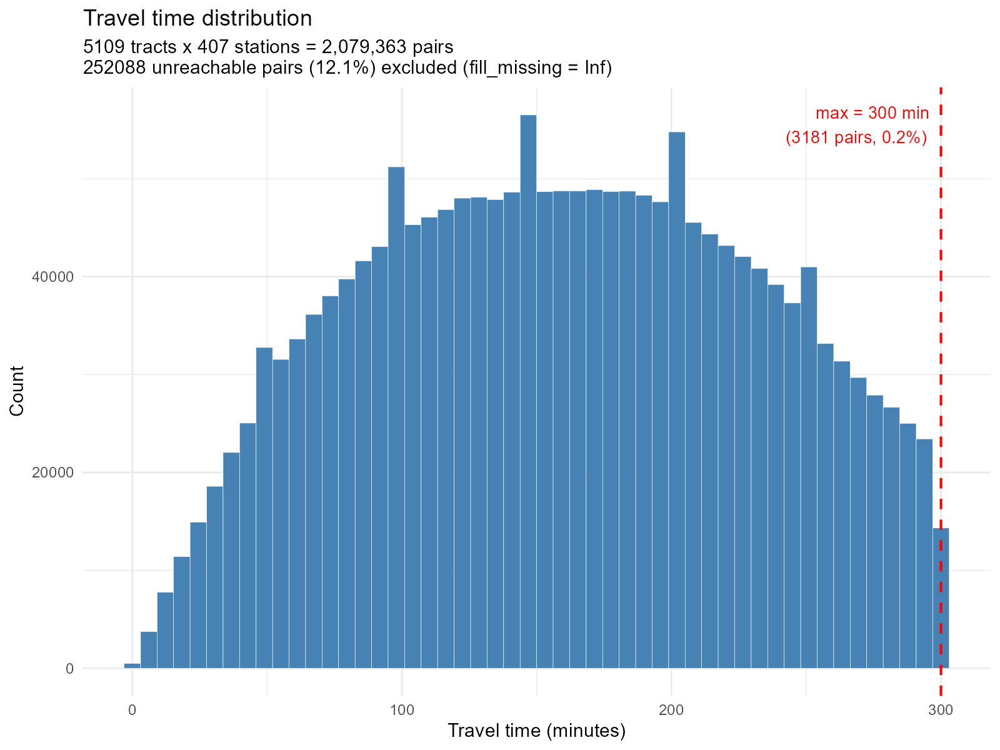
Heatmap — rows = tracts (ordered by latitude), columns = stations. Block-diagonal structure reveals spatial locality:
plot_travel_times(result_vga, type = "heatmap")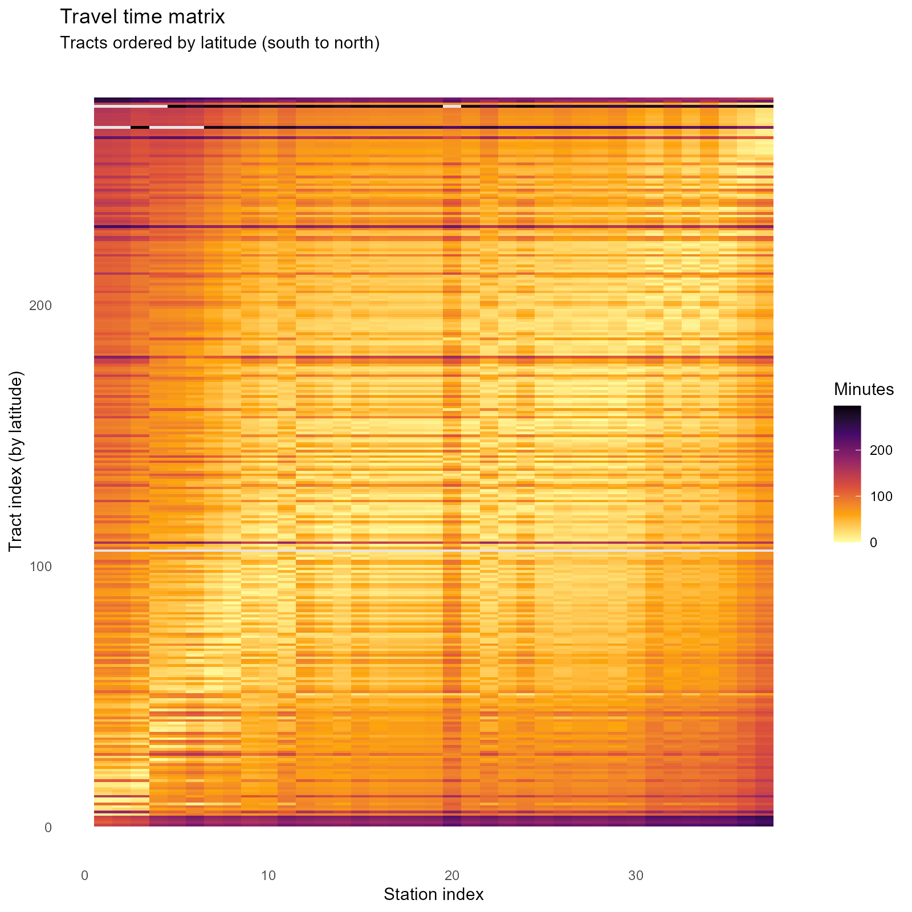
Map — station points colored by travel time for a specific tract:
plot_travel_times(result_vga, type = "map", tract = 1)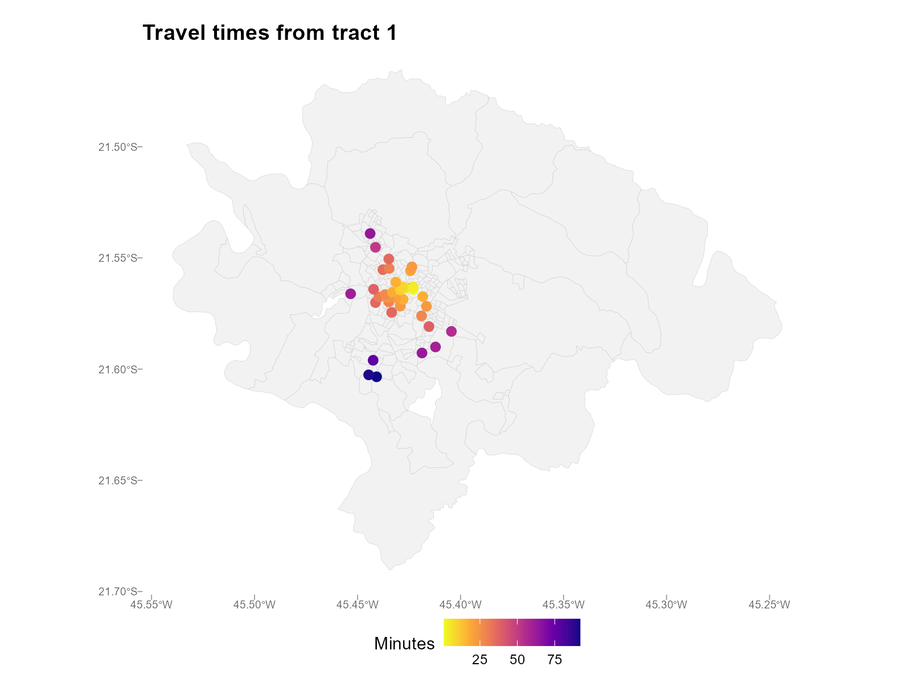
The fill_missing parameter
When the routing engine cannot find a path between a tract and a
station, the travel time is set to fill_missing. By
default, routing_control(fill_missing = NULL) resolves to
Inf, which is internally replaced by a large finite
sentinel value (e.g.,
minutes). This gives these unreachable pairs an effective weight of
zero:
Previous versions used fill_missing = max_trip_duration
(typically 300 minutes), which gave unreachable pairs a non-negligible
weight of
.
In dense cities with many unreachable pairs, this created a uniform
background weight that inflated the effective number of sources. To
restore the old behavior:
routing_control(fill_missing = 300)Interpretation
-
Spike at sentinel value: These are “fill” values
for unreachable pairs. With
fill_missing = Inf, these pairs receive zero weight and do not affect interpolation. A large number of unreachable pairs suggests poor OSM network coverage. - Bimodal distribution: May indicate disconnected graph components (e.g., separated by a river without bridge in the OSM network).
- Block-diagonal heatmap: Expected — nearby tracts have similar travel times to the same stations. Absence of block structure suggests the travel times lack spatial coherence.
7. Spatial Autocorrelation:
plot_residual_autocorrelation() +
plot_moran()
Intuition
Residual autocorrelation: If residuals are spatially clustered (nearby tracts have similar residuals), the model is missing spatial structure — a misspecification signal.
Moran’s I on interpolated variables: If the interpolated vote shares show expected spatial concentration (e.g., PT strongholds in low-income areas), the method is preserving realistic political geography.
Formal definition
Global Moran’s I:
where are spatial weights (queen contiguity). Range: . Positive = clustering, = random, negative = dispersion.
LISA (Local Moran’s I): . Classification: HH (high-high cluster), LL (low-low), HL (high surrounded by low), LH (low surrounded by high).
Applied examples: Residual autocorrelation
plot_residual_autocorrelation(result_vga)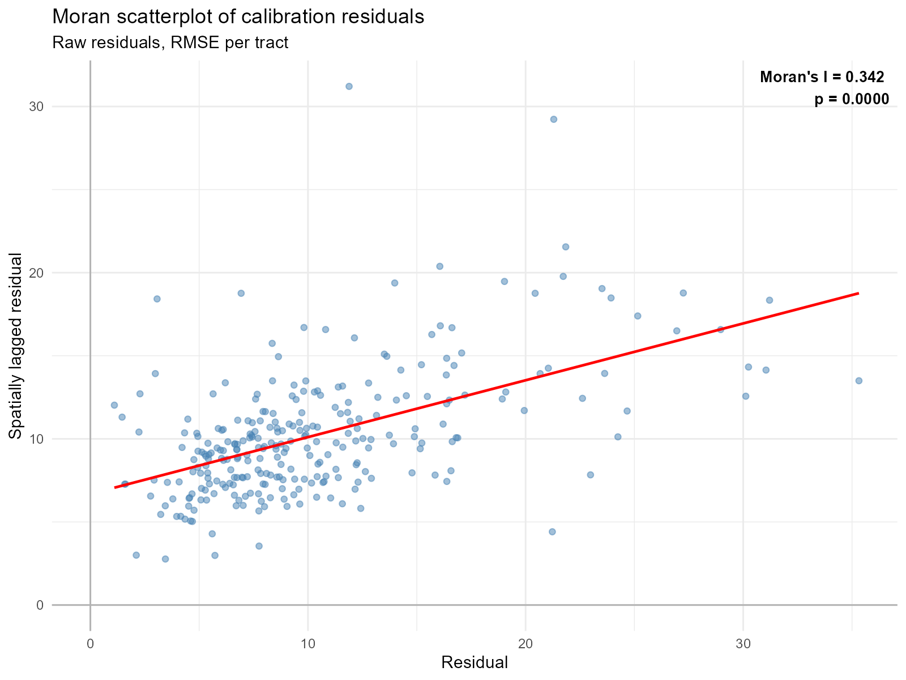
Pearson residuals:
plot_residual_autocorrelation(result_vga, residual_type = "pearson")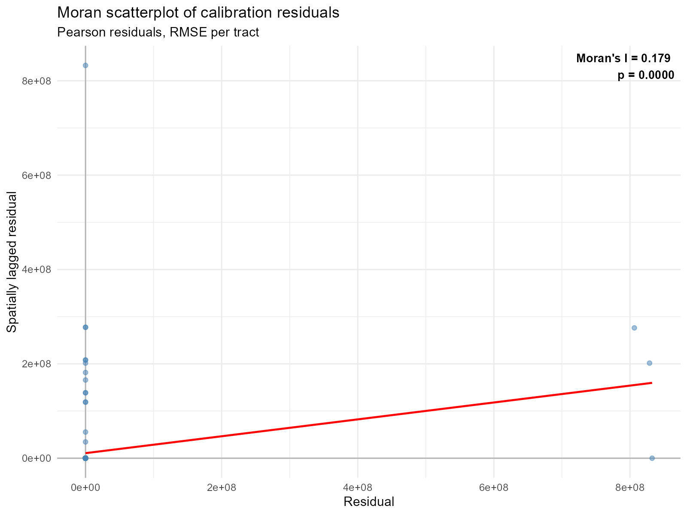
Applied examples: LISA cluster maps
plot_moran(result_vga, variable = "Lula", type = "lisa")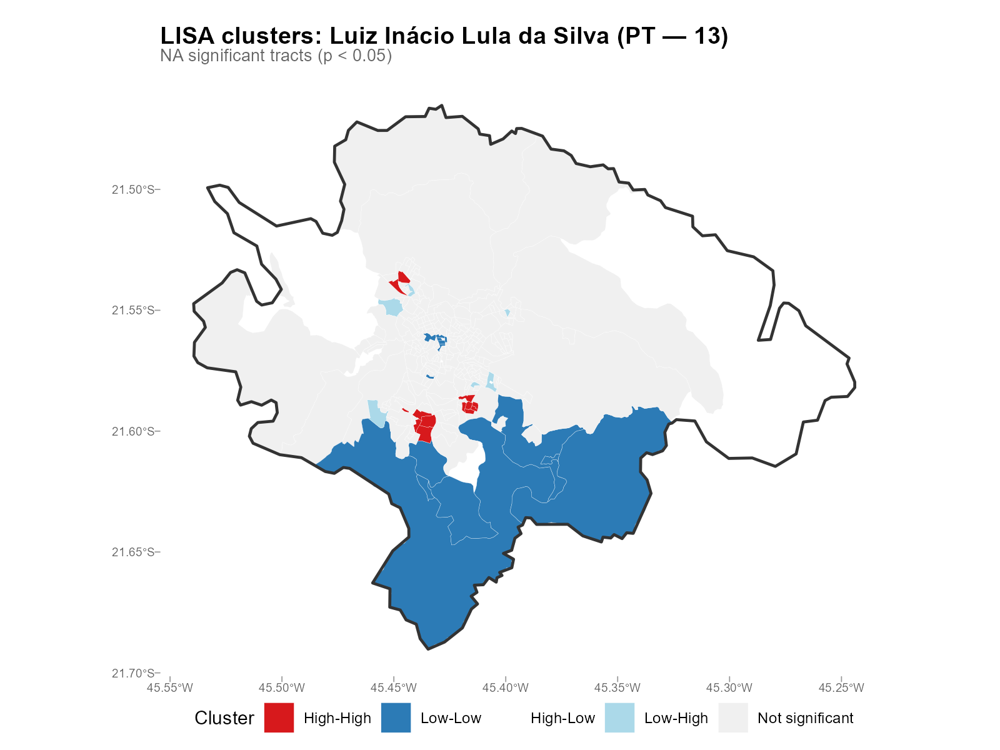
Moran scatterplot:
plot_moran(result_vga, variable = "Lula", type = "moran")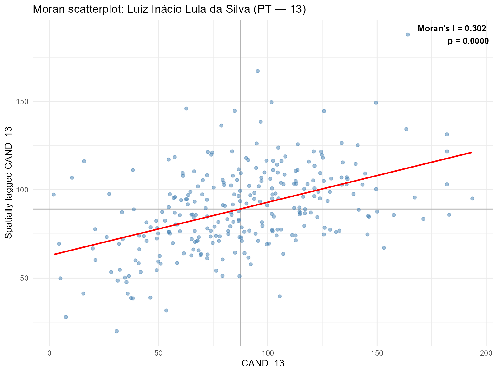
Large city:
plot_moran(result_bh, variable = "Lula", type = "lisa")
By party:
plot_moran(result_nit, variable = "PT", type = "lisa")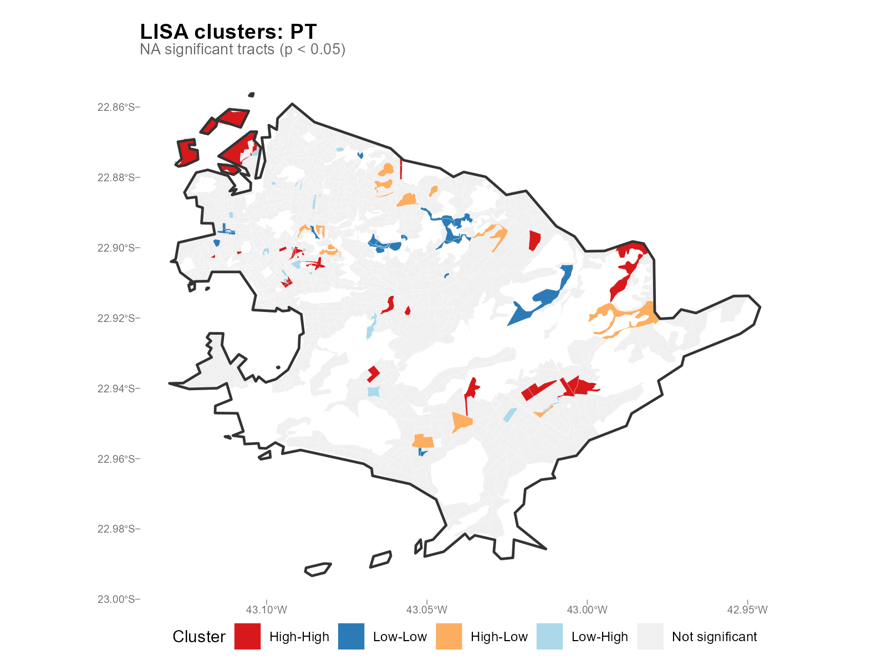
Interpretation
- Significant Moran’s I on residuals (p < 0.05): The model has spatially structured error. Consider whether the travel time data has systematic problems in certain areas.
- HH clusters of Lula votes: Expected in low-income neighborhoods (PT strongholds). Their presence validates that the interpolation preserves known political geography.
- HL/LH clusters: Spatial outliers — tracts with high vote share surrounded by low (or vice versa). May indicate local effects or data irregularities.
8. Baseline Comparisons: compare_baselines() +
leave_one_out()
Intuition
Is the optimized IDW actually better than simpler alternatives? And how robust is the interpolation to removing individual stations?
Formal definition
Baselines: - Nearest: for , otherwise (binary assignment to closest station) - Uniform: (equal weight to all stations, column-normalized) - Areal: based on spatial intersection areas between tract and station Voronoi cells
Leave-one-out: Remove station , predict its demographics using remaining stations with the full-model alpha values. Compare predicted vs actual. This is the only form of out-of-sample validation possible (there is no tract-level ground truth).
Applied examples: compare_baselines()
compare_baselines(result_vga)#> Baseline comparison
#> ----------------------------------------------------------------------
#> Optimized IDW RMSE=11.89 Deviance=18946.51
#> Nearest station RMSE=36.79 Deviance=157454.96 (IDW 68% better)
#> Uniform weights RMSE=15.81 Deviance=34553.92 (IDW 25% better)
#> ----------------------------------------------------------------------
compare_baselines(result_bh, methods = c("nearest", "uniform"))#> Baseline comparison
#> ----------------------------------------------------------------------
#> Optimized IDW RMSE=7.11 Deviance=144450.98
#> Nearest station RMSE=27.00 Deviance=1393922.64 (IDW 74% better)
#> Uniform weights RMSE=12.96 Deviance=477898.82 (IDW 45% better)
#> ----------------------------------------------------------------------Applied examples: leave_one_out()
leave_one_out(result_igr)#>
#> LOO: station 1 / 17
#> LOO: station 2 / 17
#> LOO: station 3 / 17
#> LOO: station 4 / 17
#> LOO: station 5 / 17
#> LOO: station 6 / 17
#> LOO: station 7 / 17
#> LOO: station 8 / 17
#> LOO: station 9 / 17
#> LOO: station 10 / 17
#> LOO: station 11 / 17
#> LOO: station 12 / 17
#> LOO: station 13 / 17
#> LOO: station 14 / 17
#> LOO: station 15 / 17
#> LOO: station 16 / 17
#> LOO: station 17 / 17
#> Leave-one-out RMSE: 7.2895 (mean), 7.1375 (median)
#> Full model RMSE: 6.7842
#> LOO degradation: 7.4%
leave_one_out(result_vga)#>
#> LOO: station 1 / 30
#> LOO: station 2 / 30
#> LOO: station 3 / 30
#> LOO: station 4 / 30
#> LOO: station 5 / 30
#> LOO: station 6 / 30
#> LOO: station 7 / 30
#> LOO: station 8 / 30
#> LOO: station 9 / 30
#> LOO: station 10 / 30
#> LOO: station 11 / 30
#> LOO: station 12 / 30
#> LOO: station 13 / 30
#> LOO: station 14 / 30
#> LOO: station 15 / 30
#> LOO: station 16 / 30
#> LOO: station 17 / 30
#> LOO: station 18 / 30
#> LOO: station 19 / 30
#> LOO: station 20 / 30
#> LOO: station 21 / 30
#> LOO: station 22 / 30
#> LOO: station 23 / 30
#> LOO: station 24 / 30
#> LOO: station 25 / 30
#> LOO: station 26 / 30
#> LOO: station 27 / 30
#> LOO: station 28 / 30
#> LOO: station 29 / 30
#> LOO: station 30 / 30
#> Leave-one-out RMSE: 14.6001 (mean), 14.5283 (median)
#> Full model RMSE: 11.8866
#> LOO degradation: 22.8%Interpretation
- Positive improvement %: The optimized IDW has lower RMSE/deviance than the baseline. The optimization adds value.
- Negative improvement %: This should not happen. If it does, the optimization may have overfitted or the data has issues.
- LOO degradation: LOO RMSE should be comparable to full-model RMSE. If LOO RMSE is much larger, the model may be overfitting to specific station configurations.
9. Ecological Validation
9a. Implied Turnout Rates: plot_turnout_rates()
Intuition
For each tract and demographic bracket, the implied turnout rate is:
In Brazil, voting is compulsory for ages 18–69, so expected turnout is ~75–85%. For 16–17 and 70+, voting is optional and rates should be lower. Rates exceeding 100% indicate tracts where the model allocates more voters than residents — signaling boundary effects or registration mismatches.
Applied examples
Bracket boxplot:
plot_turnout_rates(result_vga, type = "bracket")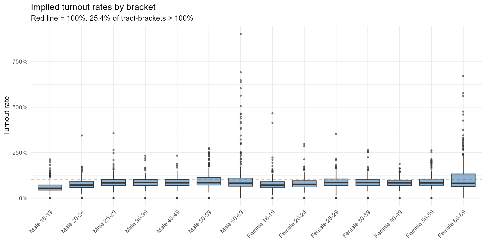
plot_turnout_rates(result_nit, type = "bracket")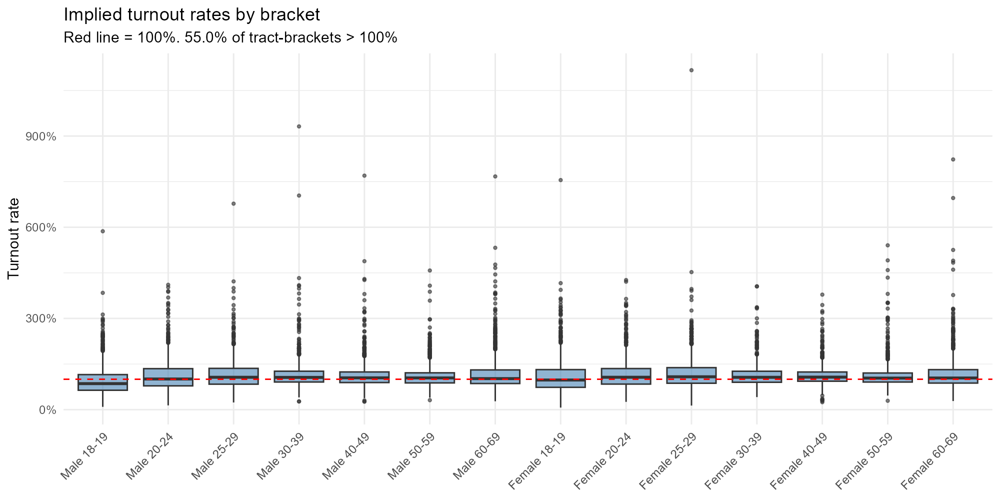
Spatial pattern:
plot_turnout_rates(result_bh, type = "map")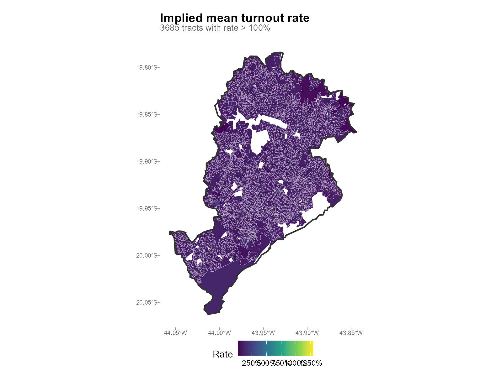
Faceted histogram:
plot_turnout_rates(result_vga, type = "histogram")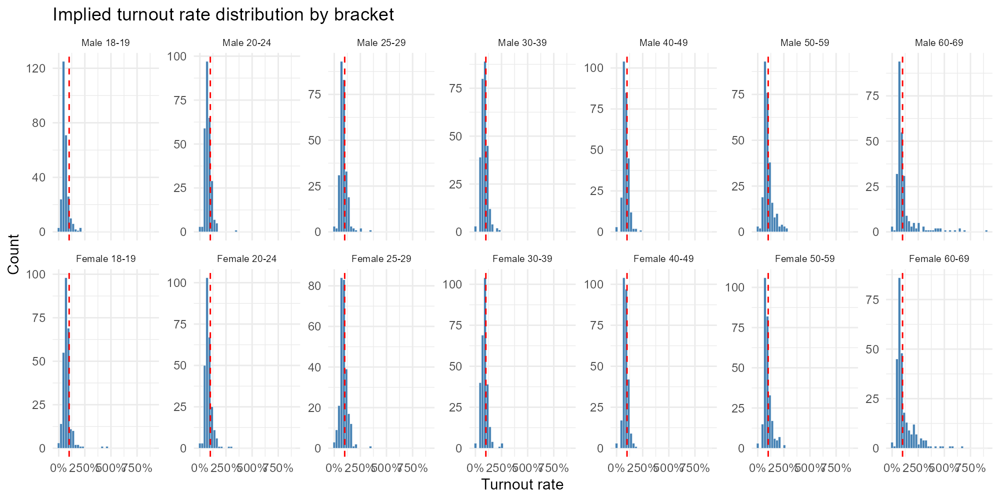
Interpretation
- Compulsory brackets clustering around 80%: Expected for ages 18–69.
- Optional brackets lower: 16–17 and 70+ should show lower turnout.
- Rates > 100%: Voters registered in one municipality who may actually reside in another (commuters, students). These boundary effects are a known limitation of the model.
9b. Income-Vote Correlation: plot_income()
Intuition
The negative correlation between PT vote share and income is one of the best-documented patterns in Brazilian political science (the “PT-income gradient”). If the interpolation preserves this gradient, it builds confidence that the spatial allocation of votes is realistic. If it destroys it, something is wrong.
Income data comes from censobr (Census Bureau microdata), which provides mean household head income by tract. No deflation is applied — within a single census year, the correlation is scale-invariant.
Applied examples
Lula (PT) vs income — expect negative correlation:
plot_income(result_vga, variable = "Lula", type = "scatter")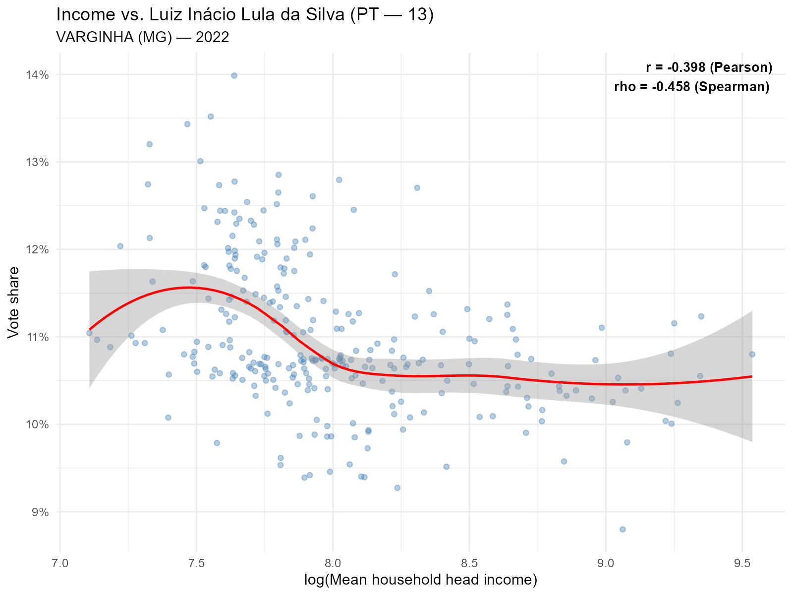
Bolsonaro (PL) vs income — expect positive correlation:
plot_income(result_vga, variable = 22, type = "scatter")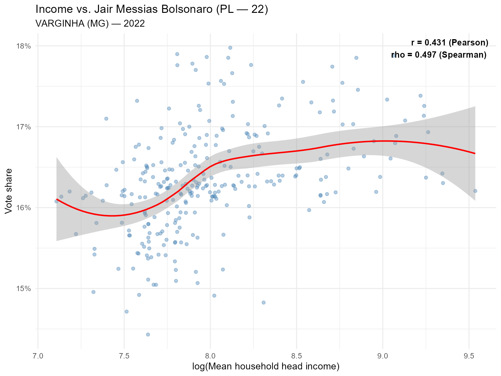
Larger city:
plot_income(result_bh, variable = "Lula", type = "scatter")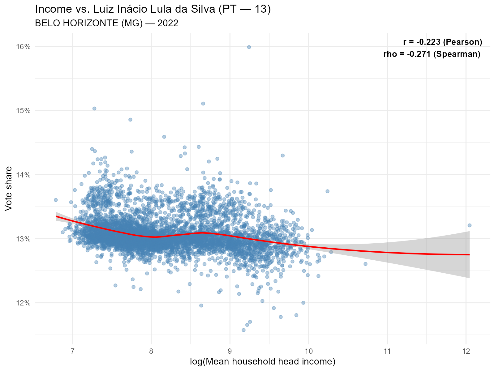
Side-by-side maps:
plot_income(result_nit, variable = "Lula", type = "map")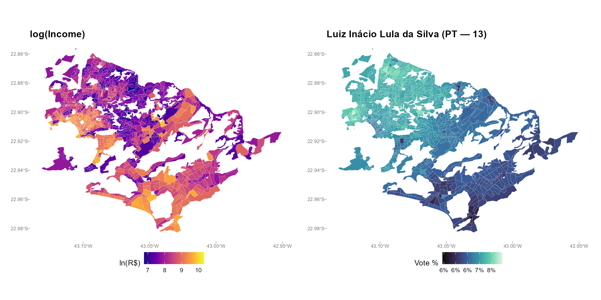
9c. Cross-Round Consistency: plot_ecological()
Intuition
Political geography is sticky. Neighborhoods that vote strongly for a candidate in round 1 should vote even more strongly in round 2 (where only 2 candidates remain). A high correlation between turno 1 and turno 2 tract-level vote shares validates that the interpolation preserves spatial patterns.
Applied examples
plot_ecological(result_vga, result_vga2,
variable = "Lula", type = "scatter")
Side-by-side maps:
plot_ecological(result_vga, result_vga2,
variable = "Lula", type = "map")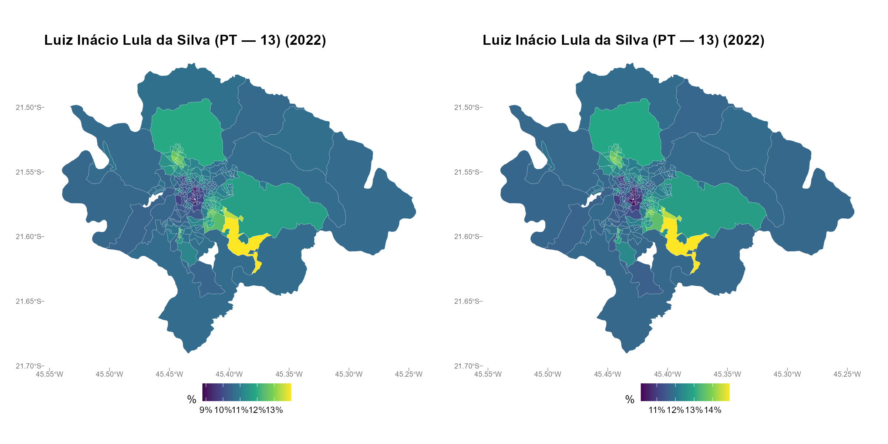
Interpretation
- Strong positive correlation between rounds: The spatial patterns are consistent, as expected. The method is recovering stable partisan geography.
- Weak or no correlation: The interpolation may be injecting noise rather than recovering signal. Investigate whether the travel time data or optimization is causing problems.
10. Quick Reference
| Function | Question it answers | Key arguments | When to worry |
|---|---|---|---|
diagnostics() |
Is anything obviously wrong? | verbose |
Any FAIL or multiple WARNs |
plot_convergence() |
Did the optimizer converge? |
which, log_y
|
Oscillating loss, non-shrinking gradient |
plot_alpha() |
How does distance decay vary? |
type, summary_fn,
brackets
|
Many tracts with |
plot_residuals() |
How well are demographics reproduced? |
type, residual_type,
summary_fn
|
Large systematic bias, Pearson > 3 |
residual_summary() |
Which brackets/tracts fit worst? | type |
One bracket much worse than others |
weight_summary() |
How concentrated are the weights? | — | Many tracts with effective N = 1 |
plot_weights() |
Where are catchment areas? |
type, tract,
top_k
|
Catchments that defy geography |
plot_connections() |
Which stations serve which tracts? |
tract, top_k,
threshold
|
Long-distance connections |
plot_travel_times() |
Is the travel time matrix clean? |
type, tract
|
Large spike at max value |
plot_residual_autocorrelation() |
Are residuals spatially clustered? |
residual_type,
summary_fn
|
Significant Moran’s I (p < 0.05) |
plot_moran() |
Is vote geography realistic? |
variable, type
|
No spatial clustering |
compare_baselines() |
Is IDW better than naive methods? | methods |
Negative improvement |
leave_one_out() |
Is the model overfitting? | max_stations |
LOO RMSE >> full RMSE |
plot_turnout_rates() |
Are implied turnout rates plausible? | type |
Many tracts > 100% |
plot_income() |
Does the PT-income gradient hold? |
variable, type
|
Wrong sign on correlation |
plot_ecological() |
Are spatial patterns consistent? |
variable, type
|
Weak cross-round correlation |